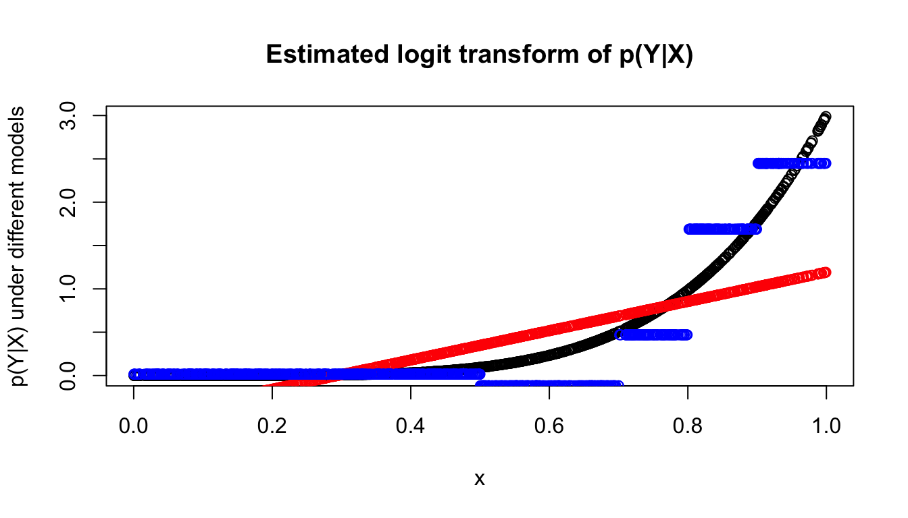
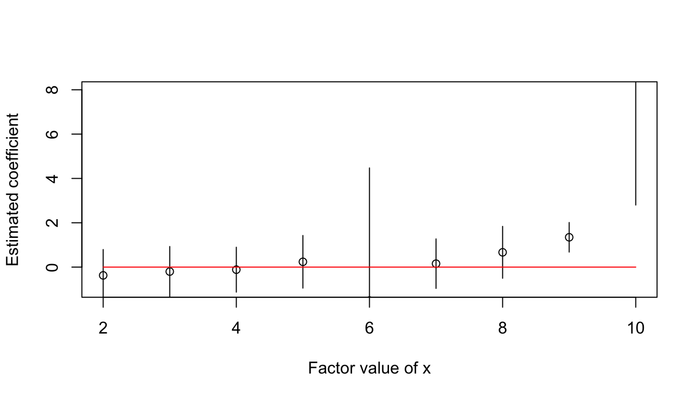

glmdisc package: discretization at its finestvignettes/glmdisc.Rmd
glmdisc.RmdThis research has been financed by Crédit Agricole Consumer Finance (CA CF), subsidiary of the Crédit Agricole Group which provides all kinds of banking and insurance services. CA CF specializes in consumer loans. It is a joint work at Inria Nord-Europe between Adrien Ehrhardt (CA CF, Inria), Christophe Biernacki (Inria, Lille University), Vincent Vandewalle (Inria, Lille University) and Philippe Heinrich (Lille University).
In order to accept / reject loan applications more efficiently (both quicker and to select better applicants), most financial institutions resort to Credit Scoring: given the applicant’s characteristics he/she is given a Credit Score, which has been statistically designed using previously accepted applicants, and which partly decides whether the financial institution will grant the loan or not.
The current methodology for building a Credit Score in most financial institutions is based on logistic regression for several (mostly practical) reasons: it generally gives satisfactory discriminant results, it is reasonably well explainable (contrary to a random forest for example), it is robust to missing data (in particular not financed clients) that follow a MAR missingness mechanism.
In practice, the statistical modeler has historical data about each customer’s characteristics. For obvious reasons, only data available at the time of inquiry must be used to build a future application scorecard. Those data often take the form of a well-structured table with one line per client alongside their performance (did they pay back their loan or not?) as can be seen in the following table:
| Job | Habitation | Time_in_job | Children | Family_status | Default |
|---|---|---|---|---|---|
| Craftsman | Owner | 10 | 0 | Divorced | No |
| Technician | Renter | 20 | 1 | Widower | No |
| Executive | Starter | 5 | 2 | Single | Yes |
| Office employee | By family | 2 | 3 | Married | No |
In the rest of the vignette, the random vector \(X=(X_j)_1^d\) will designate the predictive features, i.e. the characteristics of a client. The random variable \(Y \in \{0,1\}\) will designate the label, i.e. if the client has defaulted (\(Y=1\)) or not (\(Y=0\)).
We are provided with an i.i.d. sample \((\bar{x},\bar{y}) = (x_i,y_i)_1^n\) consisting in \(n\) observations of \(X\) and \(Y\).
The logistic regression model assumes the following relation between \(X\) (supposed continuous here) and \(Y\): \[\ln \left( \frac{p_\theta(Y=1|x)}{p_\theta(Y=0|x)} \right) = \theta_0 + \sum_{j=1}^d \theta_j*x_j \] where \(\theta = (\theta_j)_0^d\) are estimated using \((\bar{x},\bar{y})\).
Clearly, the model assumes linearity of the logit transform of the response \(Y\) with respect to \(X\).
Fitting a logistic regression model on “raw” data presents several problems, among which some are tackled here.
First, among all collected information on individuals, some are irrelevant for predicting \(Y\). Their coefficient \(\theta_j\) should subsequently be \(0\) which might (eventually) be the case asymptotically (i.e. \(n \rightarrow \infty\)).
Second, some collected information are highly correlated and affect each other’s coefficient estimation.
As a consequence, data scientists often perform feature selection before training a machine learning algorithm such as logistic regression.
There already exists methods and packages to perform feature selection, see for example the caret package.
glmdisc is not a feature selection tool but acts as such as a side-effect as we will see in the next part.
When provided with continuous features, the logistic regression model assumes linearity of the logit transform of the response \(Y\) with respect to \(X\). This might not be the case at all.
For example, we can simulate a logistic model with an arbitrary power of \(X\) and then try to fit a linear logistic model:
x = matrix(runif(1000), nrow = 1000, ncol = 1) p = 1/(1+exp(-3*x^5)) y = rbinom(1000,1,p) modele_lin <- glm(y ~ x, family = binomial(link="logit")) pred_lin <- predict(modele_lin,as.data.frame(x),type="response") pred_lin_logit <- predict(modele_lin,as.data.frame(x))
| True_prob | Pred_lin |
|---|---|
| 0.5007289 | 0.4865701 |
| 0.5001627 | 0.4541247 |
| 0.8171524 | 0.7676885 |
| 0.5587921 | 0.6580008 |
| 0.5926925 | 0.6838867 |
| 0.9215439 | 0.7987942 |
Of course, providing the glm function with a formula object containing \(X^5\) would solve the problem. This can’t be done in practice for two reasons: first, it is too time-consuming to examine all features and candidate polynomials; second, we lose the interpretability of the logistic decision function which was of primary interest.
Consequently, we wish to discretize the input variable \(X\) into a categorical feature which will “minimize” the error with respect to the “true” underlying relation:
x_disc <- factor(cut(x,c(-Inf,0.5,0.7,0.8,0.9,+Inf)),labels = c(1,2,3,4,5)) modele_disc <- glm(y ~ x_disc, family = binomial(link="logit")) pred_disc <- predict(modele_disc,as.data.frame(x_disc),type="response") pred_disc_logit <- predict(modele_disc,as.data.frame(x_disc))
| True_prob | Pred_lin | Pred_disc |
|---|---|---|
| 0.5007289 | 0.4865701 | 0.4861111 |
| 0.5001627 | 0.4541247 | 0.4861111 |
| 0.8171524 | 0.7676885 | 0.7956989 |
| 0.5587921 | 0.6580008 | 0.5754717 |
| 0.5926925 | 0.6838867 | 0.5754717 |
| 0.9215439 | 0.7987942 | 0.9306931 |

When provided with categorical features, the logistic regression model fits a coefficient for all its values (except one which is taken as a reference). A common problem arises when there are too many values as each value will be taken by a small number of observations \(x_{i,j}\) which makes the estimation of a logistic regression coefficient unstable:
x_disc_bad_idea <- factor(cut(x,c(-Inf,0.1,0.2,0.3,0.4,0.5,0.6,0.7,0.8,0.9,+Inf)),labels = c(1,2,3,4,5,6,7,8,9,10))
If we divide the training set in 10 and estimate the variance of each coefficient, we get:

All intervals crossing \(0\) are non-significant! We should group factor values to get a stable estimation and (hopefully) significant coefficient values.
Let \(Q=(Q_j)_1^d\) be the latent discretized transform of \(X\), i.e. taking values in \(\{0,\ldots,m_j\}\) where the number of values of each covariate \(m_j\) is also latent.
The fitted logistic regression model is now: \[\ln \left( \frac{p_\theta(Y=1|q)}{p_\theta(Y=0|q)} \right) = \theta_0 + \sum_{j=1}^d \sum_{k=1}^{m_j} \theta_j^k*\mathbb{1}_{q_j=k}\] Clearly, the number of parameters has grown which allows for flexible approximation of the true underlying model \(p(Y|Q)\).
Our goal is to obtain the model \(p_\theta(Y|e)\) with best predictive power. As \(Q\) and \(\theta\) are both optimized, a formal goodness-of-fit criterion could be: \[ (\hat{\theta},\hat{\bar{e}}) = \arg \max_{\theta,\bar{e}} \text{AIC}(p_\theta(\bar{y}|\bar{e})) \] where AIC stands for Akaike Information Criterion.
The problem seems well-posed: if we were able to generate all discretization schemes transforming \(X\) to \(Q\), learn \(p_\theta(y|e)\) for each of them and compare their AIC values, the problem would be solved.
Unfortunately, there are way too many candidates to follow this procedure. Suppose we want to construct \(k\) intervals of \(Q_j\) given \(n\) distinct \((x_{i,j})_1^n\). There is \(n \choose k\) models. The true value of \(k\) is unknown, so it must be looped over. Finally, as logistic regression is a multivariate model, the discretization of \(Q_j\) can influence the discretization of \(Q^k\), \(k \neq j\).
As a consequence, existing approaches to discretization (in particular discretization of continuous attributes) rely on strong assumptions to simplify the search of good candidates as can be seen in the review of Ramírez‐Gallego, S. et al. (2016) - see References section.
\(Q\) can be introduced in \(p(Y|X)\): \[\forall \: x,y, \; p(y|x) = \sum_e p(y|x,e)p(e|x)\]
First, we assume that all information about \(Y\) in \(X\) is already contained in \(Q\) so that: \[\forall \: x,y,q, \; p(y|x,q)=p(y|q)\] Second, we assume the conditional independence of \(Q_j\) given \(X_j\), i.e. knowing \(X_j\), the discretization \(Q_j\) is independent of the other features \(X^k\) and \(Q^k\) for all \(k \neq j\): \[\forall \:x, k\neq j, \; Q_j | x_j \perp Q_k | x_k\] The first equation becomes: \[\forall \: x,y, \; p(y|x) = \sum_q p(y|q) \prod_{j=1}^d p(q_j|x_j)\] As said earlier, we consider only logistic regression models on discretized data \(p_\theta(y|e)\). Additionnally, it seems like we have to make further assumptions on the nature of the relationship of \(q_j\) to \(x_j\). We chose to use polytomous logistic regressions for continuous \(X_j\) and contengency tables for qualitative \(X_j\). This is an arbitrary choice and future versions will include the possibility of plugging your own model.
The first equation becomes: \[\forall \: x,y, \; p(y|x) = \sum_q p_\theta(y|q) \prod_{j=1}^d p_{\alpha_j}(q_j|x_j)\]
It is still hard to optimize over \(p(y|x;\theta,\alpha)\) as the number of candidate discretizations is gigantic as said earlier.
However, calculating \(p(y,q|x)\) is easy: \[\forall \: x,y, \; p(y,q|x) = p_\theta(y|q) \prod_{j=1}^d p_{\alpha_j}(q_j|x_j)\]
As a consequence, we will draw random candidates \(e\) approximately at the mode of the distribution \(p(y,\cdot|x)\) using an SEM algorithm (see References section).
To update, at each random draw, the parameters \(\theta\) and \(\alpha\) and propose a new discretization \(e\), we use the following equation: \[p(q_j|x_j,y,q_{\{-j\}}) \propto p_\theta(y|q) p_{\alpha_j}(q_j|x_j)\] Note that we draw \(q_j\) knowing all other variables, especially \(q_{-\{j\}}\): this is called a Gibbs sampler (see References section). It is an MCMC method which target distribution is \(p(q|x,y)\).
In a continuous setting, if there is an interaction between features \(k > l\), then the logistic regression model becomes \(\text{logit}[p_\theta(1|x)] = \theta_0 + \sum_{j=1}^d \theta_j x_j + \theta_{kl} x^k x^l\). It amounts to adding some flexibility to the model by introducing a non-linearity, as was done with discretization.
We consider that features interacting in the logistic regression model are unknown and denote by \(\Delta\) the random matrix and \(\delta\) its observation with \(\delta_{kl} = 0\) for \(k \leq l\), \(\delta_{kl} = 1\) for \(k > l\) if features \(k\) and \(l\) interact, \(\delta_{kl} = 0\) otherwise.
Introducing \(\Delta\) as a latent variable as we have done for discretization, we get \(p(\delta|x,y) \propto p_\theta(y|x,\delta) = \text{logit}^{-1} [\theta_0 + \sum_{j=1}^d \theta_j x_j + \sum_{k>l} \delta_{kl} \theta_{kl} x^k x^l]\).
Again, a simple strategy would consist in estimating \(\hat{\theta}_\delta\) for every value of \(\Delta\) i.e. \(2^{\frac{d(d-1)}{2}}\) models and compare their AIC or BIC values.
As a consequence of this untractable approach, we propose an MCMC procedure to draw \(\delta\) from \(p(\delta|x,y)\).
The Metropolis-Hastings algorithm (see References section) is an MCMC procedure which relies on: 1. A proposal distribution \(q_{kl}\), the conditional probability of proposing to change the current state of \(\delta_{kl}\). 2. The acceptance distribution \(a_{kl}\), the conditional probability to accept changing the current state of \(\delta_{kl}\).
The transition probability is the product of these terms: \(p_{kl} = q_{kl}a_{kl}\).
We must choose a proposal distribution \(q_{kl}\). We suspect that a good hint for knowing if there effectively is an interaction between features \(k\) and \(l\) is to compare the bivariate logistic regression model with \(x_k\) and \(x_l\) to the logistic regression model containing \(x_k\), \(x_l\) and their interaction term. Comparison can be done via the BIC criterion for example: \(\text{hint}_{kl} \propto \exp(-\text{BIC}(\text{with interaction}) + \text{BIC}(\text{without interaction}))\).
Given the current state of \(\Delta\) denoted by \(\delta^{\text{current}}\), we want to propose changing the \(\delta_{kl}\) entry if it is far from our “hint”, i.e.: \(q_{kl}=|\delta^{\text{current}}_{kl} - \text{hint}_{kl}|\).
We draw \(kl\) from \(q_{kl}\) and subsequently obtain \(\delta^{\text{new}}\) which \(kl\) entry is \(1-\delta^{\text{current}}_{kl}\).
This gives \(a_{kl} = min(1,\exp(-\text{BIC}(\delta^{\text{new}})+\text{BIC}(\delta^{\text{current}}))\frac{q_{kl}}{1-q_{kl}})\).
This approach would work as a “stand-alone” model selection tool but it can also be included in the discretization algorithm described in the previous section. That was developed in the glmdisc package.
glmdisc packageglmdisc functionThe glmdisc function implements the algorithm discribed in the previous section. Its parameters are described first, then its internals are briefly discussed. We finally focus on its ouptuts.
The number of iterations in the SEM algorithm is controlled through the iter parameter. It can be useful to first run the glmdisc function with a low (10-50) iter parameter so you can have a better idea of how much time your code will run.
The validation and test boolean parameters control if the provided dataset should be divided into training, validation and/or test sets. The validation set aims at evaluating the quality of the model fit at each iteration while the test set provides the quality measure of the final chosen model.
The criterion parameters lets the user choose between standard model selection statistics like aic and bic and the gini index performance measure (proportional to the more traditional AUC measure). Note that if validation=TRUE, there is no need to penalize the log-likelihood and aic and bic become equivalent. On the contrary if criterion="gini" and validation=FALSE then the algorithm may overfit the training data.
The m_start parameter controls the maximum number of categories of \(Q_j\) for \(X_j\) continuous. The SEM algorithm will start with random \(Q_j\) taking values in \(\{1,m_{\text{start}}\}\). For qualitative features \(X_j\), \(Q_j\) is initialized with as many values as \(X_j\) so that m_start has no effect.
The reg_type parameter controls the model used to fit \(Q_j\) to continuous \(X_j\). The default behavior (reg_type=poly) uses multinom from the nnet package which is a polytomous logistic regression (see References section). The other reg_type value is polr from the MASS package which is an ordered logistic regression (simpler to estimate but less flexible as it fits way fewer parameters).
Empirical studies show that with a reasonably small training dataset (\(\leq 100 000\) rows) and a small m_start parameter (\(\leq 20\)), approximately \(500\) to \(1500\) iterations are largely sufficient to obtain a satisfactory model \(p_\theta(y|q)\).
First, the discretized version \(Q\) of \(X\) is initialized at random using the user-provided maximum number of values for quantitative values through the m_start parameter.
Then we iterate times: First, the model \(p_\theta(y|q)\), where \(q\) denotes the current value of \(Q\), is adjusted. Then, for each feature \(X_j\), the model \(p_{\alpha_j}(q|x)\) is adjusted (depending on the type of \(X_j\) it can be a polytomous logistic regression or a contengency table). Finally, we draw a new candidate \(q_j\) with probability \(p_\theta(y|q)p_{\alpha_j}(q_j|x_j)\).
The performance metric chosen through the criterion parameter determines the best candidate \(q\).
First we simulate a “true” underlying discrete model:
x = matrix(runif(300), nrow = 100, ncol = 3) cuts = seq(0,1,length.out= 4) xd = apply(x,2, function(col) as.numeric(cut(col,cuts))) theta = t(matrix(c(0,0,0,2,2,2,-2,-2,-2),ncol=3,nrow=3)) log_odd = rowSums(t(sapply(seq_along(xd[,1]), function(row_id) sapply(seq_along(xd[row_id,]), function(element) theta[xd[row_id,element],element])))) y = rbinom(100,1,1/(1+exp(-log_odd)))
The glmdisc function will try to “recover” the hidden true discretization xd when provided only with x and y:
library(glmdisc) set.seed(123) discretization <- glmdisc(x,y,iter=50,m_start=5,test=FALSE,validation=FALSE,criterion="aic",interact=FALSE)
For now, we simulated a discrete model without interactions. We can verify that our proposed approach for interaction discovery selects a model without interactions.
all_formula <- list() for (l in 1:10) { set.seed(l) x = matrix(runif(300), nrow = 100, ncol = 3) cuts = seq(0,1,length.out= 4) xd = apply(x,2, function(col) as.numeric(cut(col,cuts))) theta = t(matrix(c(0,0,0,2,2,2,-2,-2,-2),ncol=3,nrow=3)) log_odd = rowSums(t(sapply(seq_along(xd[,1]), function(row_id) sapply(seq_along(xd[row_id,]), function(element) theta[xd[row_id,element],element])))) y = rbinom(100,1,1/(1+exp(-log_odd))) discretization <- glmdisc(x,y,iter=50,m_start=5,test=FALSE,validation=FALSE,criterion="aic",interact=TRUE) all_formula[[l]] <- discretization@best.disc$formulaOfBbestestLogisticRegression } #barplot(table(grepl(":",all_formula)),names.arg=c("No interaction","One interaction"),xlim = 2)
Conversely, we can simulate a discrete model with an interaction and report how many times the proposed algorithm detected the right interaction.
all_formula <- list() for (l in 1:10) { set.seed(100+l) x = matrix(runif(3000), nrow = 1000, ncol = 3) cuts = seq(0,1,length.out= 4) xd = apply(x,2, function(col) as.numeric(cut(col,cuts))) theta = t(matrix(c(0,0,0,2,2,2,-2,-2,-2),ncol=3,nrow=3)) log_odd = matrix(0,1000,1) for (i in 1:1000) { log_odd[i] = 2*(xd[i,1]==1)+ (-2)*(xd[i,1]==2)+ 2*(xd[i,1]==1)*(xd[i,2]==1)+ 4*(xd[i,1]==2)*(xd[i,2]==2)+ (-2)*(xd[i,2]==1)*(xd[i,3]==2)+ (-4)*(xd[i,2]==2)*(xd[i,3]==1)+ 1*(xd[i,2]==3)*(xd[i,3]==1)+ (-1)*(xd[i,1]==1)*(xd[i,3]==3)+ 3*(xd[i,1]==3)*(xd[i,3]==2)+ (-1)*(xd[i,1]==2)*(xd[i,3]==3) } y = rbinom(1000,1,1/(1+exp(-log_odd))) discretization <- glmdisc(x,y,iter=50,m_start=5,test=FALSE,validation=FALSE,criterion="aic",interact=TRUE) all_formula[[l]] <- discretization@best.disc$formulaOfBbestestLogisticRegression } #barplot(table(grepl(":",all_formula)),names.arg=c("No interaction","One interaction"),xlim = 2)
parameters slotThe parameters slot refers back to the user-provided parameters given to the glmdisc function. Consequently, users can compare results of different glmdisc with respect to their parameters.
discretization@parameters #> $test #> [1] FALSE #> #> $validation #> [1] FALSE #> #> $criterion #> [1] "aic" #> #> $iter #> [1] 50 #> #> $m_start #> [1] 5 #> #> $reg_type #> [1] "poly" #> #> $types_data #> [1] "numeric" "numeric" "numeric" #> #> $encoder #> Dummy Variable Object #> #> Formula: ~V1 + V2 + V3 #> <environment: 0x7faf4d16f8f0> #> 3 variables, 3 factors #> Variables and levels will be separated by '_' #> A less than full rank encoding is used #> #> $interact #> [1] TRUE
best.disc slotThe best.disc slot contains all that is needed to reproduce the best discretization scheme obtained by glmdisc function: the first element is the best logistic regression model obtained \(p_\theta(y|e)\); the second element is its associated “link” function, i.e. either the multinom or polr functions fit to each continuous features and the contengency tables fit to each quantitative features.
discretization@best.disc[[1]] #> $coefficients #> [1] -1.32943135 1.35760660 -0.93817671 0.69734447 -0.30888302 0.09622603 #> [7] 0.18587674 -0.47209789 0.07356415 #> #> $fitted.values #> [1] 0.1729661 0.7746227 0.7269985 0.7269985 0.6134946 0.8374954 0.7041491 #> [8] 0.6134946 0.1896267 0.1729661 0.4791031 0.8216251 0.2570834 0.7269985 #> [15] 0.6134946 0.7746227 0.7746227 0.3168282 0.1896267 0.2362237 0.7269985 #> [22] 0.1729661 0.6134946 0.7544128 0.6397636 0.7746227 0.7746227 0.1729661 #> [29] 0.6397636 0.6134946 0.1729661 0.7746227 0.8374954 0.7544128 0.7041491 #> [36] 0.2118102 0.6397636 0.6397636 0.7274523 0.6134946 0.1896267 0.1896267 #> [43] 0.7746227 0.6134946 0.6397636 0.6397636 0.8216251 0.3416221 0.6397636 #> [50] 0.2570834 0.6397636 0.1896267 0.7544128 0.6397636 0.7746227 0.7746227 #> [57] 0.2570834 0.6397636 0.2362237 0.7746227 0.1896267 0.6134946 0.1896267 #> [64] 0.2597384 0.3416221 0.1519797 0.8374954 0.7544128 0.8374954 0.2570834 #> [71] 0.1729661 0.6397636 0.7269985 0.2570834 0.1896267 0.2570834 0.8374954 #> [78] 0.2597384 0.7746227 0.1896267 0.7544128 0.2362237 0.7269985 0.1729661 #> [85] 0.6397636 0.7746227 0.7746227 0.2570834 0.7746227 0.2570834 0.2570834 #> [92] 0.7544128 0.1729661 0.1896267 0.8374954 0.7746227 0.7269985 0.7544128 #> [99] 0.2570834 0.8374954 0.2570834 0.7746227 0.7269985 0.6134946 0.7746227 #> [106] 0.3416221 0.2570834 0.7746227 0.2570834 0.2597384 0.7746227 0.6134946 #> [113] 0.2570834 0.7746227 0.6397636 0.7269985 0.6134946 0.7746227 0.7746227 #> [120] 0.2597384 0.7746227 0.7746227 0.6134946 0.1896267 0.7544128 0.6134946 #> [127] 0.7544128 0.7041491 0.1729661 0.2570834 0.7746227 0.1896267 0.7746227 #> [134] 0.8216251 0.2362237 0.7746227 0.2570834 0.8374954 0.7746227 0.2570834 #> [141] 0.7746227 0.6134946 0.7746227 0.1080889 0.2570834 0.7746227 0.1080889 #> [148] 0.1729661 0.1729661 0.2570834 0.7544128 0.8216251 0.7746227 0.6134946 #> [155] 0.2570834 0.7746227 0.1896267 0.6134946 0.6134946 0.6134946 0.7544128 #> [162] 0.3416221 0.1729661 0.6397636 0.2570834 0.8216251 0.2570834 0.6397636 #> [169] 0.6397636 0.6397636 0.6134946 0.6134946 0.6397636 0.7746227 0.7269985 #> [176] 0.6134946 0.8216251 0.6134946 0.1896267 0.2597384 0.1896267 0.6397636 #> [183] 0.2570834 0.1080889 0.8374954 0.8374954 0.1729661 0.8374954 0.1896267 #> [190] 0.6397636 0.2362237 0.3168282 0.7746227 0.7746227 0.1896267 0.3416221 #> [197] 0.7544128 0.6397636 0.2570834 0.7746227 0.8374954 0.8374954 0.7746227 #> [204] 0.8216251 0.6397636 0.6397636 0.8216251 0.2362237 0.7544128 0.2570834 #> [211] 0.6134946 0.6397636 0.2570834 0.6397636 0.7746227 0.2570834 0.2570834 #> [218] 0.7544128 0.2387325 0.7544128 0.1896267 0.7746227 0.2387325 0.1896267 #> [225] 0.3416221 0.1896267 0.2362237 0.6134946 0.7746227 0.7746227 0.2570834 #> [232] 0.7544128 0.1519797 0.8374954 0.8374954 0.2387325 0.6397636 0.7746227 #> [239] 0.6397636 0.6134946 0.7544128 0.6397636 0.2362237 0.2570834 0.6134946 #> [246] 0.7746227 0.1896267 0.4791031 0.6397636 0.7746227 0.6397636 0.7746227 #> [253] 0.7746227 0.7269985 0.6397636 0.7544128 0.7746227 0.8374954 0.7544128 #> [260] 0.6397636 0.1729661 0.7544128 0.6397636 0.1896267 0.7544128 0.2570834 #> [267] 0.4791031 0.7746227 0.6397636 0.2597384 0.7746227 0.7746227 0.8216251 #> [274] 0.7746227 0.7544128 0.2570834 0.2362237 0.8374954 0.6134946 0.6134946 #> [281] 0.6397636 0.2570834 0.2597384 0.6397636 0.7544128 0.7746227 0.7544128 #> [288] 0.3168282 0.6397636 0.6134946 0.4791031 0.6397636 0.7746227 0.6134946 #> [295] 0.7746227 0.2570834 0.6134946 0.7746227 0.8374954 0.1729661 0.7746227 #> [302] 0.7544128 0.6397636 0.1896267 0.7746227 0.7269985 0.7746227 0.8374954 #> [309] 0.7746227 0.2362237 0.2570834 0.2570834 0.2570834 0.6134946 0.7746227 #> [316] 0.6134946 0.7269985 0.6134946 0.8216251 0.6397636 0.7544128 0.7746227 #> [323] 0.8374954 0.6134946 0.6397636 0.2118102 0.8374954 0.6397636 0.2570834 #> [330] 0.3168282 0.3416221 0.7544128 0.3416221 0.7746227 0.2597384 0.7544128 #> [337] 0.7544128 0.6134946 0.6397636 0.1729661 0.7544128 0.7746227 0.2597384 #> [344] 0.2597384 0.7746227 0.2362237 0.7041491 0.7746227 0.2118102 0.2362237 #> [351] 0.6397636 0.6134946 0.8374954 0.6134946 0.7746227 0.7746227 0.1896267 #> [358] 0.6134946 0.1896267 0.8374954 0.8216251 0.1896267 0.6134946 0.7544128 #> [365] 0.6134946 0.2362237 0.8374954 0.1896267 0.2570834 0.1896267 0.3416221 #> [372] 0.6134946 0.2570834 0.6397636 0.8216251 0.2570834 0.7544128 0.7269985 #> [379] 0.7544128 0.7269985 0.2570834 0.6397636 0.2570834 0.7544128 0.1729661 #> [386] 0.6134946 0.1729661 0.7746227 0.1896267 0.7746227 0.1080889 0.6397636 #> [393] 0.7746227 0.7269985 0.6134946 0.2570834 0.7544128 0.7269985 0.1896267 #> [400] 0.7269985 0.1896267 0.8374954 0.7746227 0.7269985 0.2570834 0.3416221 #> [407] 0.7544128 0.7746227 0.2570834 0.4791031 0.6134946 0.1729661 0.1896267 #> [414] 0.6397636 0.6134946 0.2570834 0.8216251 0.7746227 0.7746227 0.3416221 #> [421] 0.8216251 0.1896267 0.2362237 0.7544128 0.6134946 0.7544128 0.1729661 #> [428] 0.3416221 0.6397636 0.1896267 0.6134946 0.2570834 0.2362237 0.3168282 #> [435] 0.6397636 0.2570834 0.7746227 0.2570834 0.6397636 0.7269985 0.7746227 #> [442] 0.6134946 0.7544128 0.2570834 0.2570834 0.7746227 0.7746227 0.6397636 #> [449] 0.7746227 0.2362237 0.6397636 0.7746227 0.1729661 0.6134946 0.7746227 #> [456] 0.6134946 0.6397636 0.6134946 0.7544128 0.7544128 0.7746227 0.1896267 #> [463] 0.7746227 0.2570834 0.1729661 0.3168282 0.2570834 0.6134946 0.7746227 #> [470] 0.7746227 0.8374954 0.3168282 0.2362237 0.6397636 0.2570834 0.6397636 #> [477] 0.8374954 0.6397636 0.6134946 0.2597384 0.3416221 0.1896267 0.8374954 #> [484] 0.8374954 0.6134946 0.8216251 0.2570834 0.8374954 0.7746227 0.6134946 #> [491] 0.1896267 0.6397636 0.6402906 0.3416221 0.7746227 0.6397636 0.1896267 #> [498] 0.7544128 0.7746227 0.2570834 0.6134946 0.8374954 0.3416221 0.1896267 #> [505] 0.2570834 0.2362237 0.6397636 0.7544128 0.6397636 0.7746227 0.7544128 #> [512] 0.2570834 0.1729661 0.6134946 0.6397636 0.7544128 0.6397636 0.7746227 #> [519] 0.6397636 0.8216251 0.6134946 0.7746227 0.6134946 0.6397636 0.4791031 #> [526] 0.2362237 0.6397636 0.6134946 0.2362237 0.7746227 0.7746227 0.8216251 #> [533] 0.7746227 0.2570834 0.8374954 0.6134946 0.6134946 0.7041491 0.7746227 #> [540] 0.2362237 0.7269985 0.7746227 0.7746227 0.7746227 0.2570834 0.2570834 #> [547] 0.3168282 0.6397636 0.7746227 0.8374954 0.7269985 0.3168282 0.7746227 #> [554] 0.7269985 0.2570834 0.6397636 0.7544128 0.2570834 0.6397636 0.3168282 #> [561] 0.6397636 0.6397636 0.7746227 0.2597384 0.6397636 0.6397636 0.7746227 #> [568] 0.8216251 0.8374954 0.3416221 0.4791031 0.2597384 0.6397636 0.1896267 #> [575] 0.2362237 0.1729661 0.2570834 0.6397636 0.7746227 0.6397636 0.2570834 #> [582] 0.7544128 0.7269985 0.2597384 0.6397636 0.6397636 0.8216251 0.8374954 #> [589] 0.7746227 0.6397636 0.7544128 0.7269985 0.6397636 0.2597384 0.6134946 #> [596] 0.7269985 0.7544128 0.7746227 0.2570834 0.2570834 0.6397636 0.7269985 #> [603] 0.7544128 0.1896267 0.2362237 0.8216251 0.7269985 0.7746227 0.7746227 #> [610] 0.7041491 0.3416221 0.6397636 0.2570834 0.6397636 0.7544128 0.6397636 #> [617] 0.7544128 0.6134946 0.6134946 0.6134946 0.7544128 0.6134946 0.2387325 #> [624] 0.7746227 0.3416221 0.7746227 0.2362237 0.1896267 0.7746227 0.7746227 #> [631] 0.7746227 0.6397636 0.4791031 0.2570834 0.2570834 0.7041491 0.1729661 #> [638] 0.6134946 0.7746227 0.6397636 0.7746227 0.7544128 0.6397636 0.7544128 #> [645] 0.2362237 0.7746227 0.2570834 0.4791031 0.8374954 0.2597384 0.2570834 #> [652] 0.2570834 0.6397636 0.7544128 0.3416221 0.7544128 0.6397636 0.7746227 #> [659] 0.7746227 0.2570834 0.2570834 0.8374954 0.2570834 0.2597384 0.2362237 #> [666] 0.6134946 0.6402906 0.6397636 0.3168282 0.7544128 0.2362237 0.7544128 #> [673] 0.2362237 0.7041491 0.6397636 0.6397636 0.7746227 0.6397636 0.7746227 #> [680] 0.6397636 0.6134946 0.3416221 0.7544128 0.8374954 0.8216251 0.7746227 #> [687] 0.6397636 0.6397636 0.6397636 0.7544128 0.2362237 0.6397636 0.7746227 #> [694] 0.7746227 0.7041491 0.6134946 0.6134946 0.7269985 0.3168282 0.1896267 #> [701] 0.2570834 0.7269985 0.7746227 0.7544128 0.2362237 0.7746227 0.7746227 #> [708] 0.7544128 0.6397636 0.1519797 0.6397636 0.7544128 0.8216251 0.1729661 #> [715] 0.2570834 0.7269985 0.8374954 0.6397636 0.6397636 0.6397636 0.6134946 #> [722] 0.7746227 0.2570834 0.7746227 0.2570834 0.7269985 0.6397636 0.6134946 #> [729] 0.7544128 0.6397636 0.2570834 0.8374954 0.2597384 0.2570834 0.6134946 #> [736] 0.6134946 0.6134946 0.7544128 0.3168282 0.2570834 0.3168282 0.6397636 #> [743] 0.2570834 0.7746227 0.3168282 0.7746227 0.1729661 0.7746227 0.7746227 #> [750] 0.7269985 0.1896267 0.7746227 0.7746227 0.2597384 0.7746227 0.1896267 #> [757] 0.7544128 0.6402906 0.7746227 0.1896267 0.2570834 0.6397636 0.2570834 #> [764] 0.7746227 0.7269985 0.7269985 0.3416221 0.6134946 0.1896267 0.6397636 #> [771] 0.7746227 0.6397636 0.2570834 0.6397636 0.3168282 0.7544128 0.1896267 #> [778] 0.3416221 0.2570834 0.7746227 0.2570834 0.7746227 0.3416221 0.6397636 #> [785] 0.7746227 0.6397636 0.2597384 0.4791031 0.7746227 0.6397636 0.6134946 #> [792] 0.1729661 0.7746227 0.7544128 0.7746227 0.6397636 0.7746227 0.6397636 #> [799] 0.7746227 0.6397636 0.7746227 0.2570834 0.1896267 0.6134946 0.7746227 #> [806] 0.6397636 0.1519797 0.2570834 0.1080889 0.7746227 0.2570834 0.2570834 #> [813] 0.2570834 0.7269985 0.1896267 0.3416221 0.7269985 0.2570834 0.6402906 #> [820] 0.7274523 0.1729661 0.7746227 0.6397636 0.7746227 0.6134946 0.8374954 #> [827] 0.6397636 0.2570834 0.7746227 0.3168282 0.2570834 0.7544128 0.7746227 #> [834] 0.3416221 0.6397636 0.2570834 0.2387325 0.6397636 0.7746227 0.6397636 #> [841] 0.4791031 0.7746227 0.6397636 0.2362237 0.6134946 0.6397636 0.1896267 #> [848] 0.8374954 0.7746227 0.1729661 0.6397636 0.7746227 0.6134946 0.7269985 #> [855] 0.7746227 0.7269985 0.7746227 0.1080889 0.7544128 0.1729661 0.7544128 #> [862] 0.8374954 0.7746227 0.7746227 0.6397636 0.7746227 0.8374954 0.7269985 #> [869] 0.3416221 0.7746227 0.1896267 0.7746227 0.6134946 0.3168282 0.6134946 #> [876] 0.7746227 0.2570834 0.6397636 0.7269985 0.2387325 0.1896267 0.2570834 #> [883] 0.1519797 0.1519797 0.6397636 0.6134946 0.2362237 0.8374954 0.2570834 #> [890] 0.7746227 0.7746227 0.2362237 0.2362237 0.8216251 0.3416221 0.6134946 #> [897] 0.6134946 0.2362237 0.6397636 0.7041491 0.2570834 0.1729661 0.1896267 #> [904] 0.3168282 0.6134946 0.2597384 0.7746227 0.7746227 0.7746227 0.6397636 #> [911] 0.7746227 0.1896267 0.2362237 0.2597384 0.7746227 0.1896267 0.6397636 #> [918] 0.7746227 0.2570834 0.6397636 0.7746227 0.7746227 0.2362237 0.6397636 #> [925] 0.2570834 0.8374954 0.2362237 0.7746227 0.2570834 0.6134946 0.7746227 #> [932] 0.7544128 0.1896267 0.6134946 0.7746227 0.6397636 0.1519797 0.7544128 #> [939] 0.8374954 0.3416221 0.2570834 0.6402906 0.7544128 0.8374954 0.7746227 #> [946] 0.7544128 0.2362237 0.2362237 0.6134946 0.6397636 0.6397636 0.6134946 #> [953] 0.6397636 0.7544128 0.1896267 0.7746227 0.8374954 0.8374954 0.7544128 #> [960] 0.2570834 0.2570834 0.7274523 0.2387325 0.7544128 0.2597384 0.7746227 #> [967] 0.2597384 0.1896267 0.7746227 0.7269985 0.6134946 0.2570834 0.6397636 #> [974] 0.7746227 0.6397636 0.7269985 0.1896267 0.1896267 0.6397636 0.8374954 #> [981] 0.7041491 0.7269985 0.1729661 0.8374954 0.2570834 0.6397636 0.7746227 #> [988] 0.6397636 0.6397636 0.8374954 0.2570834 0.2362237 0.6134946 0.8374954 #> [995] 0.1729661 0.8374954 0.6134946 0.2362237 0.7746227 0.7544128 #> #> $linear.predictors #> [1] -1.56475023 1.23460032 0.97944724 0.97944724 0.46202560 1.63970937 #> [7] 0.86713465 0.46202560 -1.45243763 -1.56475023 -0.08363644 1.52739678 #> [13] -1.06118299 0.97944724 0.46202560 1.23460032 1.23460032 -0.76838654 #> [19] -1.45243763 -1.17349559 0.97944724 -1.56475023 0.46202560 1.12228773 #> [25] 0.57433819 1.23460032 1.23460032 -1.56475023 0.57433819 0.46202560 #> [31] -1.56475023 1.23460032 1.63970937 1.12228773 0.86713465 -1.31404858 #> [37] 0.57433819 0.57433819 0.98173473 0.46202560 -1.45243763 -1.45243763 #> [43] 1.23460032 0.46202560 0.57433819 0.57433819 1.52739678 -0.65607394 #> [49] 0.57433819 -1.06118299 0.57433819 -1.45243763 1.12228773 0.57433819 #> [55] 1.23460032 1.23460032 -1.06118299 0.57433819 -1.17349559 1.23460032 #> [61] -1.45243763 0.46202560 -1.45243763 -1.04732858 -0.65607394 -1.71915763 #> [67] 1.63970937 1.12228773 1.63970937 -1.06118299 -1.56475023 0.57433819 #> [73] 0.97944724 -1.06118299 -1.45243763 -1.06118299 1.63970937 -1.04732858 #> [79] 1.23460032 -1.45243763 1.12228773 -1.17349559 0.97944724 -1.56475023 #> [85] 0.57433819 1.23460032 1.23460032 -1.06118299 1.23460032 -1.06118299 #> [91] -1.06118299 1.12228773 -1.56475023 -1.45243763 1.63970937 1.23460032 #> [97] 0.97944724 1.12228773 -1.06118299 1.63970937 -1.06118299 1.23460032 #> [103] 0.97944724 0.46202560 1.23460032 -0.65607394 -1.06118299 1.23460032 #> [109] -1.06118299 -1.04732858 1.23460032 0.46202560 -1.06118299 1.23460032 #> [115] 0.57433819 0.97944724 0.46202560 1.23460032 1.23460032 -1.04732858 #> [121] 1.23460032 1.23460032 0.46202560 -1.45243763 1.12228773 0.46202560 #> [127] 1.12228773 0.86713465 -1.56475023 -1.06118299 1.23460032 -1.45243763 #> [133] 1.23460032 1.52739678 -1.17349559 1.23460032 -1.06118299 1.63970937 #> [139] 1.23460032 -1.06118299 1.23460032 0.46202560 1.23460032 -2.11041227 #> [145] -1.06118299 1.23460032 -2.11041227 -1.56475023 -1.56475023 -1.06118299 #> [151] 1.12228773 1.52739678 1.23460032 0.46202560 -1.06118299 1.23460032 #> [157] -1.45243763 0.46202560 0.46202560 0.46202560 1.12228773 -0.65607394 #> [163] -1.56475023 0.57433819 -1.06118299 1.52739678 -1.06118299 0.57433819 #> [169] 0.57433819 0.57433819 0.46202560 0.46202560 0.57433819 1.23460032 #> [175] 0.97944724 0.46202560 1.52739678 0.46202560 -1.45243763 -1.04732858 #> [181] -1.45243763 0.57433819 -1.06118299 -2.11041227 1.63970937 1.63970937 #> [187] -1.56475023 1.63970937 -1.45243763 0.57433819 -1.17349559 -0.76838654 #> [193] 1.23460032 1.23460032 -1.45243763 -0.65607394 1.12228773 0.57433819 #> [199] -1.06118299 1.23460032 1.63970937 1.63970937 1.23460032 1.52739678 #> [205] 0.57433819 0.57433819 1.52739678 -1.17349559 1.12228773 -1.06118299 #> [211] 0.46202560 0.57433819 -1.06118299 0.57433819 1.23460032 -1.06118299 #> [217] -1.06118299 1.12228773 -1.15964118 1.12228773 -1.45243763 1.23460032 #> [223] -1.15964118 -1.45243763 -0.65607394 -1.45243763 -1.17349559 0.46202560 #> [229] 1.23460032 1.23460032 -1.06118299 1.12228773 -1.71915763 1.63970937 #> [235] 1.63970937 -1.15964118 0.57433819 1.23460032 0.57433819 0.46202560 #> [241] 1.12228773 0.57433819 -1.17349559 -1.06118299 0.46202560 1.23460032 #> [247] -1.45243763 -0.08363644 0.57433819 1.23460032 0.57433819 1.23460032 #> [253] 1.23460032 0.97944724 0.57433819 1.12228773 1.23460032 1.63970937 #> [259] 1.12228773 0.57433819 -1.56475023 1.12228773 0.57433819 -1.45243763 #> [265] 1.12228773 -1.06118299 -0.08363644 1.23460032 0.57433819 -1.04732858 #> [271] 1.23460032 1.23460032 1.52739678 1.23460032 1.12228773 -1.06118299 #> [277] -1.17349559 1.63970937 0.46202560 0.46202560 0.57433819 -1.06118299 #> [283] -1.04732858 0.57433819 1.12228773 1.23460032 1.12228773 -0.76838654 #> [289] 0.57433819 0.46202560 -0.08363644 0.57433819 1.23460032 0.46202560 #> [295] 1.23460032 -1.06118299 0.46202560 1.23460032 1.63970937 -1.56475023 #> [301] 1.23460032 1.12228773 0.57433819 -1.45243763 1.23460032 0.97944724 #> [307] 1.23460032 1.63970937 1.23460032 -1.17349559 -1.06118299 -1.06118299 #> [313] -1.06118299 0.46202560 1.23460032 0.46202560 0.97944724 0.46202560 #> [319] 1.52739678 0.57433819 1.12228773 1.23460032 1.63970937 0.46202560 #> [325] 0.57433819 -1.31404858 1.63970937 0.57433819 -1.06118299 -0.76838654 #> [331] -0.65607394 1.12228773 -0.65607394 1.23460032 -1.04732858 1.12228773 #> [337] 1.12228773 0.46202560 0.57433819 -1.56475023 1.12228773 1.23460032 #> [343] -1.04732858 -1.04732858 1.23460032 -1.17349559 0.86713465 1.23460032 #> [349] -1.31404858 -1.17349559 0.57433819 0.46202560 1.63970937 0.46202560 #> [355] 1.23460032 1.23460032 -1.45243763 0.46202560 -1.45243763 1.63970937 #> [361] 1.52739678 -1.45243763 0.46202560 1.12228773 0.46202560 -1.17349559 #> [367] 1.63970937 -1.45243763 -1.06118299 -1.45243763 -0.65607394 0.46202560 #> [373] -1.06118299 0.57433819 1.52739678 -1.06118299 1.12228773 0.97944724 #> [379] 1.12228773 0.97944724 -1.06118299 0.57433819 -1.06118299 1.12228773 #> [385] -1.56475023 0.46202560 -1.56475023 1.23460032 -1.45243763 1.23460032 #> [391] -2.11041227 0.57433819 1.23460032 0.97944724 0.46202560 -1.06118299 #> [397] 1.12228773 0.97944724 -1.45243763 0.97944724 -1.45243763 1.63970937 #> [403] 1.23460032 0.97944724 -1.06118299 -0.65607394 1.12228773 1.23460032 #> [409] -1.06118299 -0.08363644 0.46202560 -1.56475023 -1.45243763 0.57433819 #> [415] 0.46202560 -1.06118299 1.52739678 1.23460032 1.23460032 -0.65607394 #> [421] 1.52739678 -1.45243763 -1.17349559 1.12228773 0.46202560 1.12228773 #> [427] -1.56475023 -0.65607394 0.57433819 -1.45243763 0.46202560 -1.06118299 #> [433] -1.17349559 -0.76838654 0.57433819 -1.06118299 1.23460032 -1.06118299 #> [439] 0.57433819 0.97944724 1.23460032 0.46202560 1.12228773 -1.06118299 #> [445] -1.06118299 1.23460032 1.23460032 0.57433819 1.23460032 -1.17349559 #> [451] 0.57433819 1.23460032 -1.56475023 0.46202560 1.23460032 0.46202560 #> [457] 0.57433819 0.46202560 1.12228773 1.12228773 1.23460032 -1.45243763 #> [463] 1.23460032 -1.06118299 -1.56475023 -0.76838654 -1.06118299 0.46202560 #> [469] 1.23460032 1.23460032 1.63970937 -0.76838654 -1.17349559 0.57433819 #> [475] -1.06118299 0.57433819 1.63970937 0.57433819 0.46202560 -1.04732858 #> [481] -0.65607394 -1.45243763 1.63970937 1.63970937 0.46202560 1.52739678 #> [487] -1.06118299 1.63970937 1.23460032 0.46202560 -1.45243763 0.57433819 #> [493] 0.57662568 -0.65607394 1.23460032 0.57433819 -1.45243763 1.12228773 #> [499] 1.23460032 -1.06118299 0.46202560 1.63970937 -0.65607394 -1.45243763 #> [505] -1.06118299 -1.17349559 0.57433819 1.12228773 0.57433819 1.23460032 #> [511] 1.12228773 -1.06118299 -1.56475023 0.46202560 0.57433819 1.12228773 #> [517] 0.57433819 1.23460032 0.57433819 1.52739678 0.46202560 1.23460032 #> [523] 0.46202560 0.57433819 -0.08363644 -1.17349559 0.57433819 0.46202560 #> [529] -1.17349559 1.23460032 1.23460032 1.52739678 1.23460032 -1.06118299 #> [535] 1.63970937 0.46202560 0.46202560 0.86713465 1.23460032 -1.17349559 #> [541] 0.97944724 1.23460032 1.23460032 1.23460032 -1.06118299 -1.06118299 #> [547] -0.76838654 0.57433819 1.23460032 1.63970937 0.97944724 -0.76838654 #> [553] 1.23460032 0.97944724 -1.06118299 0.57433819 1.12228773 -1.06118299 #> [559] 0.57433819 -0.76838654 0.57433819 0.57433819 1.23460032 -1.04732858 #> [565] 0.57433819 0.57433819 1.23460032 1.52739678 1.63970937 -0.65607394 #> [571] -0.08363644 -1.04732858 0.57433819 -1.45243763 -1.17349559 -1.56475023 #> [577] -1.06118299 0.57433819 1.23460032 0.57433819 -1.06118299 1.12228773 #> [583] 0.97944724 -1.04732858 0.57433819 0.57433819 1.52739678 1.63970937 #> [589] 1.23460032 0.57433819 1.12228773 0.97944724 0.57433819 -1.04732858 #> [595] 0.46202560 0.97944724 1.12228773 1.23460032 -1.06118299 -1.06118299 #> [601] 0.57433819 0.97944724 1.12228773 -1.45243763 -1.17349559 1.52739678 #> [607] 0.97944724 1.23460032 1.23460032 0.86713465 -0.65607394 0.57433819 #> [613] -1.06118299 0.57433819 1.12228773 0.57433819 1.12228773 0.46202560 #> [619] 0.46202560 0.46202560 1.12228773 0.46202560 -1.15964118 1.23460032 #> [625] -0.65607394 1.23460032 -1.17349559 -1.45243763 1.23460032 1.23460032 #> [631] 1.23460032 0.57433819 -0.08363644 -1.06118299 -1.06118299 0.86713465 #> [637] -1.56475023 0.46202560 1.23460032 0.57433819 1.23460032 1.12228773 #> [643] 0.57433819 1.12228773 -1.17349559 1.23460032 -1.06118299 -0.08363644 #> [649] 1.63970937 -1.04732858 -1.06118299 -1.06118299 0.57433819 1.12228773 #> [655] -0.65607394 1.12228773 0.57433819 1.23460032 1.23460032 -1.06118299 #> [661] -1.06118299 1.63970937 -1.06118299 -1.04732858 -1.17349559 0.46202560 #> [667] 0.57662568 0.57433819 -0.76838654 1.12228773 -1.17349559 1.12228773 #> [673] -1.17349559 0.86713465 0.57433819 0.57433819 1.23460032 0.57433819 #> [679] 1.23460032 0.57433819 0.46202560 -0.65607394 1.12228773 1.63970937 #> [685] 1.52739678 1.23460032 0.57433819 0.57433819 0.57433819 1.12228773 #> [691] -1.17349559 0.57433819 1.23460032 1.23460032 0.86713465 0.46202560 #> [697] 0.46202560 0.97944724 -0.76838654 -1.45243763 -1.06118299 0.97944724 #> [703] 1.23460032 1.12228773 -1.17349559 1.23460032 1.23460032 1.12228773 #> [709] 0.57433819 -1.71915763 0.57433819 1.12228773 1.52739678 -1.56475023 #> [715] -1.06118299 0.97944724 1.63970937 0.57433819 0.57433819 0.57433819 #> [721] 0.46202560 1.23460032 -1.06118299 1.23460032 -1.06118299 0.97944724 #> [727] 0.57433819 0.46202560 1.12228773 0.57433819 -1.06118299 1.63970937 #> [733] -1.04732858 -1.06118299 0.46202560 0.46202560 0.46202560 1.12228773 #> [739] -0.76838654 -1.06118299 -0.76838654 0.57433819 -1.06118299 1.23460032 #> [745] -0.76838654 1.23460032 -1.56475023 1.23460032 1.23460032 0.97944724 #> [751] -1.45243763 1.23460032 1.23460032 -1.04732858 1.23460032 -1.45243763 #> [757] 1.12228773 0.57662568 1.23460032 -1.45243763 -1.06118299 0.57433819 #> [763] -1.06118299 1.23460032 0.97944724 0.97944724 -0.65607394 0.46202560 #> [769] -1.45243763 0.57433819 1.23460032 0.57433819 -1.06118299 0.57433819 #> [775] -0.76838654 1.12228773 -1.45243763 -0.65607394 -1.06118299 1.23460032 #> [781] -1.06118299 1.23460032 -0.65607394 0.57433819 1.23460032 0.57433819 #> [787] -1.04732858 -0.08363644 1.23460032 0.57433819 0.46202560 -1.56475023 #> [793] 1.23460032 1.12228773 1.23460032 0.57433819 1.23460032 0.57433819 #> [799] 1.23460032 0.57433819 1.23460032 -1.06118299 -1.45243763 0.46202560 #> [805] 1.23460032 0.57433819 -1.71915763 -1.06118299 -2.11041227 1.23460032 #> [811] -1.06118299 -1.06118299 -1.06118299 0.97944724 -1.45243763 -0.65607394 #> [817] 0.97944724 -1.06118299 0.57662568 0.98173473 -1.56475023 1.23460032 #> [823] 0.57433819 1.23460032 0.46202560 1.63970937 0.57433819 -1.06118299 #> [829] 1.23460032 -0.76838654 -1.06118299 1.12228773 1.23460032 -0.65607394 #> [835] 0.57433819 -1.06118299 -1.15964118 0.57433819 1.23460032 0.57433819 #> [841] -0.08363644 1.23460032 0.57433819 -1.17349559 0.46202560 0.57433819 #> [847] -1.45243763 1.63970937 1.23460032 -1.56475023 0.57433819 1.23460032 #> [853] 0.46202560 0.97944724 1.23460032 0.97944724 1.23460032 -2.11041227 #> [859] 1.12228773 -1.56475023 1.12228773 1.63970937 1.23460032 1.23460032 #> [865] 0.57433819 1.23460032 1.63970937 0.97944724 -0.65607394 1.23460032 #> [871] -1.45243763 1.23460032 0.46202560 -0.76838654 0.46202560 1.23460032 #> [877] -1.06118299 0.57433819 0.97944724 -1.15964118 -1.45243763 -1.06118299 #> [883] -1.71915763 -1.71915763 0.57433819 0.46202560 -1.17349559 1.63970937 #> [889] -1.06118299 1.23460032 1.23460032 -1.17349559 -1.17349559 1.52739678 #> [895] -0.65607394 0.46202560 0.46202560 -1.17349559 0.57433819 0.86713465 #> [901] -1.06118299 -1.56475023 -1.45243763 -0.76838654 0.46202560 -1.04732858 #> [907] 1.23460032 1.23460032 1.23460032 0.57433819 1.23460032 -1.45243763 #> [913] -1.17349559 -1.04732858 1.23460032 -1.45243763 0.57433819 1.23460032 #> [919] -1.06118299 0.57433819 1.23460032 1.23460032 -1.17349559 0.57433819 #> [925] -1.06118299 1.63970937 -1.17349559 1.23460032 -1.06118299 0.46202560 #> [931] 1.23460032 1.12228773 -1.45243763 0.46202560 1.23460032 0.57433819 #> [937] -1.71915763 1.12228773 1.63970937 -0.65607394 -1.06118299 0.57662568 #> [943] 1.12228773 1.63970937 1.23460032 1.12228773 -1.17349559 -1.17349559 #> [949] 0.46202560 0.57433819 0.57433819 0.46202560 0.57433819 1.12228773 #> [955] -1.45243763 1.23460032 1.63970937 1.63970937 1.12228773 -1.06118299 #> [961] -1.06118299 0.98173473 -1.15964118 1.12228773 -1.04732858 1.23460032 #> [967] -1.04732858 -1.45243763 1.23460032 0.97944724 0.46202560 -1.06118299 #> [973] 0.57433819 1.23460032 0.57433819 0.97944724 -1.45243763 -1.45243763 #> [979] 0.57433819 1.63970937 0.86713465 0.97944724 -1.56475023 1.63970937 #> [985] -1.06118299 0.57433819 1.23460032 0.57433819 0.57433819 1.63970937 #> [991] -1.06118299 -1.17349559 0.46202560 1.63970937 -1.56475023 1.63970937 #> [997] 0.46202560 -1.17349559 1.23460032 1.12228773 #> #> $loglikelihood #> [1] -567.9048 #> #> $converged #> [1] TRUE # The first link function is: discretization@best.disc[[2]][[1]] #> Call: #> nnet::multinom(formula = e ~ x, data = data.frame(e = e[continu_complete_case[, #> j] & ensemble[[1]], j], x = predictors[continu_complete_case[, #> j] & ensemble[[1]], j], stringsAsFactors = TRUE), Hess = FALSE, #> start = link[[j]]$coefficients, trace = FALSE, maxit = 50) #> #> Coefficients: #> (Intercept) x #> 2 6.7965587 -18.518803 #> 3 1.9920277 -3.641154 #> 4 0.2691619 -1.701950 #> 5 -4.8437781 7.208232 #> #> Residual Deviance: 1915.623 #> AIC: 1931.623
performance slotThe performance slot lists both the achieved performance defined by the parameters criterion, test and validation and this performance metric over all the iterations.
discretization was fit with no test nor validation and we used the AIC criterion. The best AIC achieved is therefore:
discretization@performance[[1]] #> [1] 0.5130532
The first 5 AIC values obtained on the training set over the iterations are:
discretization@performance[[2]][1:5] #> [[1]] #> [1] -Inf #> #> [[2]] #> [1] -1296.277 #> #> [[3]] #> [1] -1328.67 #> #> [[4]] #> [1] -1364.882 #> #> [[5]] #> [1] -1376.697
disc.data slotThe disc.data slot contains the discretized data obtained by applying the best discretization scheme found on the test set if test=TRUE or the validation set if validation=TRUE or the training set.
In our example, discretization has validation=FALSE and test=FALSE so that we get the discretized training set:
discretization@disc.data
| V1 | V2 | V3 | labels |
|---|---|---|---|
| 1 | 3 | 4 | 1 |
| 2 | 3 | 1 | 1 |
| 5 | 4 | 1 | 1 |
| 5 | 4 | 1 | 1 |
| 5 | 3 | 4 | 1 |
| 2 | 4 | 1 | 1 |
cont.data slotThe cont.data slot contains the original “continuous” counterpart of the disc.data slot.
In our example, discretization has validation=FALSE and test=FALSE so that we get the “raw” training set:
discretization@cont.data
| V1 | V2 | V3 | labels |
|---|---|---|---|
| 0.6145490 | 0.6258488 | 0.9705037 | 1 |
| 0.2181264 | 0.1016004 | 0.0863407 | 1 |
| 0.9175628 | 0.9687333 | 0.5527685 | 1 |
| 0.7253785 | 0.8021687 | 0.3790259 | 1 |
| 0.7418341 | 0.1886790 | 0.9901026 | 1 |
| 0.1301252 | 0.8412636 | 0.1827299 | 1 |
A few classical R methods have been adapted to the glmdisc S4 object.
The print function is the standard print.summary.glm method applied to the best discretization scheme found by the glmdisc function:
print(discretization) #> $coefficients #> [1] -1.32943135 1.35760660 -0.93817671 0.69734447 -0.30888302 0.09622603 #> [7] 0.18587674 -0.47209789 0.07356415 #> #> $fitted.values #> [1] 0.1729661 0.7746227 0.7269985 0.7269985 0.6134946 0.8374954 0.7041491 #> [8] 0.6134946 0.1896267 0.1729661 0.4791031 0.8216251 0.2570834 0.7269985 #> [15] 0.6134946 0.7746227 0.7746227 0.3168282 0.1896267 0.2362237 0.7269985 #> [22] 0.1729661 0.6134946 0.7544128 0.6397636 0.7746227 0.7746227 0.1729661 #> [29] 0.6397636 0.6134946 0.1729661 0.7746227 0.8374954 0.7544128 0.7041491 #> [36] 0.2118102 0.6397636 0.6397636 0.7274523 0.6134946 0.1896267 0.1896267 #> [43] 0.7746227 0.6134946 0.6397636 0.6397636 0.8216251 0.3416221 0.6397636 #> [50] 0.2570834 0.6397636 0.1896267 0.7544128 0.6397636 0.7746227 0.7746227 #> [57] 0.2570834 0.6397636 0.2362237 0.7746227 0.1896267 0.6134946 0.1896267 #> [64] 0.2597384 0.3416221 0.1519797 0.8374954 0.7544128 0.8374954 0.2570834 #> [71] 0.1729661 0.6397636 0.7269985 0.2570834 0.1896267 0.2570834 0.8374954 #> [78] 0.2597384 0.7746227 0.1896267 0.7544128 0.2362237 0.7269985 0.1729661 #> [85] 0.6397636 0.7746227 0.7746227 0.2570834 0.7746227 0.2570834 0.2570834 #> [92] 0.7544128 0.1729661 0.1896267 0.8374954 0.7746227 0.7269985 0.7544128 #> [99] 0.2570834 0.8374954 0.2570834 0.7746227 0.7269985 0.6134946 0.7746227 #> [106] 0.3416221 0.2570834 0.7746227 0.2570834 0.2597384 0.7746227 0.6134946 #> [113] 0.2570834 0.7746227 0.6397636 0.7269985 0.6134946 0.7746227 0.7746227 #> [120] 0.2597384 0.7746227 0.7746227 0.6134946 0.1896267 0.7544128 0.6134946 #> [127] 0.7544128 0.7041491 0.1729661 0.2570834 0.7746227 0.1896267 0.7746227 #> [134] 0.8216251 0.2362237 0.7746227 0.2570834 0.8374954 0.7746227 0.2570834 #> [141] 0.7746227 0.6134946 0.7746227 0.1080889 0.2570834 0.7746227 0.1080889 #> [148] 0.1729661 0.1729661 0.2570834 0.7544128 0.8216251 0.7746227 0.6134946 #> [155] 0.2570834 0.7746227 0.1896267 0.6134946 0.6134946 0.6134946 0.7544128 #> [162] 0.3416221 0.1729661 0.6397636 0.2570834 0.8216251 0.2570834 0.6397636 #> [169] 0.6397636 0.6397636 0.6134946 0.6134946 0.6397636 0.7746227 0.7269985 #> [176] 0.6134946 0.8216251 0.6134946 0.1896267 0.2597384 0.1896267 0.6397636 #> [183] 0.2570834 0.1080889 0.8374954 0.8374954 0.1729661 0.8374954 0.1896267 #> [190] 0.6397636 0.2362237 0.3168282 0.7746227 0.7746227 0.1896267 0.3416221 #> [197] 0.7544128 0.6397636 0.2570834 0.7746227 0.8374954 0.8374954 0.7746227 #> [204] 0.8216251 0.6397636 0.6397636 0.8216251 0.2362237 0.7544128 0.2570834 #> [211] 0.6134946 0.6397636 0.2570834 0.6397636 0.7746227 0.2570834 0.2570834 #> [218] 0.7544128 0.2387325 0.7544128 0.1896267 0.7746227 0.2387325 0.1896267 #> [225] 0.3416221 0.1896267 0.2362237 0.6134946 0.7746227 0.7746227 0.2570834 #> [232] 0.7544128 0.1519797 0.8374954 0.8374954 0.2387325 0.6397636 0.7746227 #> [239] 0.6397636 0.6134946 0.7544128 0.6397636 0.2362237 0.2570834 0.6134946 #> [246] 0.7746227 0.1896267 0.4791031 0.6397636 0.7746227 0.6397636 0.7746227 #> [253] 0.7746227 0.7269985 0.6397636 0.7544128 0.7746227 0.8374954 0.7544128 #> [260] 0.6397636 0.1729661 0.7544128 0.6397636 0.1896267 0.7544128 0.2570834 #> [267] 0.4791031 0.7746227 0.6397636 0.2597384 0.7746227 0.7746227 0.8216251 #> [274] 0.7746227 0.7544128 0.2570834 0.2362237 0.8374954 0.6134946 0.6134946 #> [281] 0.6397636 0.2570834 0.2597384 0.6397636 0.7544128 0.7746227 0.7544128 #> [288] 0.3168282 0.6397636 0.6134946 0.4791031 0.6397636 0.7746227 0.6134946 #> [295] 0.7746227 0.2570834 0.6134946 0.7746227 0.8374954 0.1729661 0.7746227 #> [302] 0.7544128 0.6397636 0.1896267 0.7746227 0.7269985 0.7746227 0.8374954 #> [309] 0.7746227 0.2362237 0.2570834 0.2570834 0.2570834 0.6134946 0.7746227 #> [316] 0.6134946 0.7269985 0.6134946 0.8216251 0.6397636 0.7544128 0.7746227 #> [323] 0.8374954 0.6134946 0.6397636 0.2118102 0.8374954 0.6397636 0.2570834 #> [330] 0.3168282 0.3416221 0.7544128 0.3416221 0.7746227 0.2597384 0.7544128 #> [337] 0.7544128 0.6134946 0.6397636 0.1729661 0.7544128 0.7746227 0.2597384 #> [344] 0.2597384 0.7746227 0.2362237 0.7041491 0.7746227 0.2118102 0.2362237 #> [351] 0.6397636 0.6134946 0.8374954 0.6134946 0.7746227 0.7746227 0.1896267 #> [358] 0.6134946 0.1896267 0.8374954 0.8216251 0.1896267 0.6134946 0.7544128 #> [365] 0.6134946 0.2362237 0.8374954 0.1896267 0.2570834 0.1896267 0.3416221 #> [372] 0.6134946 0.2570834 0.6397636 0.8216251 0.2570834 0.7544128 0.7269985 #> [379] 0.7544128 0.7269985 0.2570834 0.6397636 0.2570834 0.7544128 0.1729661 #> [386] 0.6134946 0.1729661 0.7746227 0.1896267 0.7746227 0.1080889 0.6397636 #> [393] 0.7746227 0.7269985 0.6134946 0.2570834 0.7544128 0.7269985 0.1896267 #> [400] 0.7269985 0.1896267 0.8374954 0.7746227 0.7269985 0.2570834 0.3416221 #> [407] 0.7544128 0.7746227 0.2570834 0.4791031 0.6134946 0.1729661 0.1896267 #> [414] 0.6397636 0.6134946 0.2570834 0.8216251 0.7746227 0.7746227 0.3416221 #> [421] 0.8216251 0.1896267 0.2362237 0.7544128 0.6134946 0.7544128 0.1729661 #> [428] 0.3416221 0.6397636 0.1896267 0.6134946 0.2570834 0.2362237 0.3168282 #> [435] 0.6397636 0.2570834 0.7746227 0.2570834 0.6397636 0.7269985 0.7746227 #> [442] 0.6134946 0.7544128 0.2570834 0.2570834 0.7746227 0.7746227 0.6397636 #> [449] 0.7746227 0.2362237 0.6397636 0.7746227 0.1729661 0.6134946 0.7746227 #> [456] 0.6134946 0.6397636 0.6134946 0.7544128 0.7544128 0.7746227 0.1896267 #> [463] 0.7746227 0.2570834 0.1729661 0.3168282 0.2570834 0.6134946 0.7746227 #> [470] 0.7746227 0.8374954 0.3168282 0.2362237 0.6397636 0.2570834 0.6397636 #> [477] 0.8374954 0.6397636 0.6134946 0.2597384 0.3416221 0.1896267 0.8374954 #> [484] 0.8374954 0.6134946 0.8216251 0.2570834 0.8374954 0.7746227 0.6134946 #> [491] 0.1896267 0.6397636 0.6402906 0.3416221 0.7746227 0.6397636 0.1896267 #> [498] 0.7544128 0.7746227 0.2570834 0.6134946 0.8374954 0.3416221 0.1896267 #> [505] 0.2570834 0.2362237 0.6397636 0.7544128 0.6397636 0.7746227 0.7544128 #> [512] 0.2570834 0.1729661 0.6134946 0.6397636 0.7544128 0.6397636 0.7746227 #> [519] 0.6397636 0.8216251 0.6134946 0.7746227 0.6134946 0.6397636 0.4791031 #> [526] 0.2362237 0.6397636 0.6134946 0.2362237 0.7746227 0.7746227 0.8216251 #> [533] 0.7746227 0.2570834 0.8374954 0.6134946 0.6134946 0.7041491 0.7746227 #> [540] 0.2362237 0.7269985 0.7746227 0.7746227 0.7746227 0.2570834 0.2570834 #> [547] 0.3168282 0.6397636 0.7746227 0.8374954 0.7269985 0.3168282 0.7746227 #> [554] 0.7269985 0.2570834 0.6397636 0.7544128 0.2570834 0.6397636 0.3168282 #> [561] 0.6397636 0.6397636 0.7746227 0.2597384 0.6397636 0.6397636 0.7746227 #> [568] 0.8216251 0.8374954 0.3416221 0.4791031 0.2597384 0.6397636 0.1896267 #> [575] 0.2362237 0.1729661 0.2570834 0.6397636 0.7746227 0.6397636 0.2570834 #> [582] 0.7544128 0.7269985 0.2597384 0.6397636 0.6397636 0.8216251 0.8374954 #> [589] 0.7746227 0.6397636 0.7544128 0.7269985 0.6397636 0.2597384 0.6134946 #> [596] 0.7269985 0.7544128 0.7746227 0.2570834 0.2570834 0.6397636 0.7269985 #> [603] 0.7544128 0.1896267 0.2362237 0.8216251 0.7269985 0.7746227 0.7746227 #> [610] 0.7041491 0.3416221 0.6397636 0.2570834 0.6397636 0.7544128 0.6397636 #> [617] 0.7544128 0.6134946 0.6134946 0.6134946 0.7544128 0.6134946 0.2387325 #> [624] 0.7746227 0.3416221 0.7746227 0.2362237 0.1896267 0.7746227 0.7746227 #> [631] 0.7746227 0.6397636 0.4791031 0.2570834 0.2570834 0.7041491 0.1729661 #> [638] 0.6134946 0.7746227 0.6397636 0.7746227 0.7544128 0.6397636 0.7544128 #> [645] 0.2362237 0.7746227 0.2570834 0.4791031 0.8374954 0.2597384 0.2570834 #> [652] 0.2570834 0.6397636 0.7544128 0.3416221 0.7544128 0.6397636 0.7746227 #> [659] 0.7746227 0.2570834 0.2570834 0.8374954 0.2570834 0.2597384 0.2362237 #> [666] 0.6134946 0.6402906 0.6397636 0.3168282 0.7544128 0.2362237 0.7544128 #> [673] 0.2362237 0.7041491 0.6397636 0.6397636 0.7746227 0.6397636 0.7746227 #> [680] 0.6397636 0.6134946 0.3416221 0.7544128 0.8374954 0.8216251 0.7746227 #> [687] 0.6397636 0.6397636 0.6397636 0.7544128 0.2362237 0.6397636 0.7746227 #> [694] 0.7746227 0.7041491 0.6134946 0.6134946 0.7269985 0.3168282 0.1896267 #> [701] 0.2570834 0.7269985 0.7746227 0.7544128 0.2362237 0.7746227 0.7746227 #> [708] 0.7544128 0.6397636 0.1519797 0.6397636 0.7544128 0.8216251 0.1729661 #> [715] 0.2570834 0.7269985 0.8374954 0.6397636 0.6397636 0.6397636 0.6134946 #> [722] 0.7746227 0.2570834 0.7746227 0.2570834 0.7269985 0.6397636 0.6134946 #> [729] 0.7544128 0.6397636 0.2570834 0.8374954 0.2597384 0.2570834 0.6134946 #> [736] 0.6134946 0.6134946 0.7544128 0.3168282 0.2570834 0.3168282 0.6397636 #> [743] 0.2570834 0.7746227 0.3168282 0.7746227 0.1729661 0.7746227 0.7746227 #> [750] 0.7269985 0.1896267 0.7746227 0.7746227 0.2597384 0.7746227 0.1896267 #> [757] 0.7544128 0.6402906 0.7746227 0.1896267 0.2570834 0.6397636 0.2570834 #> [764] 0.7746227 0.7269985 0.7269985 0.3416221 0.6134946 0.1896267 0.6397636 #> [771] 0.7746227 0.6397636 0.2570834 0.6397636 0.3168282 0.7544128 0.1896267 #> [778] 0.3416221 0.2570834 0.7746227 0.2570834 0.7746227 0.3416221 0.6397636 #> [785] 0.7746227 0.6397636 0.2597384 0.4791031 0.7746227 0.6397636 0.6134946 #> [792] 0.1729661 0.7746227 0.7544128 0.7746227 0.6397636 0.7746227 0.6397636 #> [799] 0.7746227 0.6397636 0.7746227 0.2570834 0.1896267 0.6134946 0.7746227 #> [806] 0.6397636 0.1519797 0.2570834 0.1080889 0.7746227 0.2570834 0.2570834 #> [813] 0.2570834 0.7269985 0.1896267 0.3416221 0.7269985 0.2570834 0.6402906 #> [820] 0.7274523 0.1729661 0.7746227 0.6397636 0.7746227 0.6134946 0.8374954 #> [827] 0.6397636 0.2570834 0.7746227 0.3168282 0.2570834 0.7544128 0.7746227 #> [834] 0.3416221 0.6397636 0.2570834 0.2387325 0.6397636 0.7746227 0.6397636 #> [841] 0.4791031 0.7746227 0.6397636 0.2362237 0.6134946 0.6397636 0.1896267 #> [848] 0.8374954 0.7746227 0.1729661 0.6397636 0.7746227 0.6134946 0.7269985 #> [855] 0.7746227 0.7269985 0.7746227 0.1080889 0.7544128 0.1729661 0.7544128 #> [862] 0.8374954 0.7746227 0.7746227 0.6397636 0.7746227 0.8374954 0.7269985 #> [869] 0.3416221 0.7746227 0.1896267 0.7746227 0.6134946 0.3168282 0.6134946 #> [876] 0.7746227 0.2570834 0.6397636 0.7269985 0.2387325 0.1896267 0.2570834 #> [883] 0.1519797 0.1519797 0.6397636 0.6134946 0.2362237 0.8374954 0.2570834 #> [890] 0.7746227 0.7746227 0.2362237 0.2362237 0.8216251 0.3416221 0.6134946 #> [897] 0.6134946 0.2362237 0.6397636 0.7041491 0.2570834 0.1729661 0.1896267 #> [904] 0.3168282 0.6134946 0.2597384 0.7746227 0.7746227 0.7746227 0.6397636 #> [911] 0.7746227 0.1896267 0.2362237 0.2597384 0.7746227 0.1896267 0.6397636 #> [918] 0.7746227 0.2570834 0.6397636 0.7746227 0.7746227 0.2362237 0.6397636 #> [925] 0.2570834 0.8374954 0.2362237 0.7746227 0.2570834 0.6134946 0.7746227 #> [932] 0.7544128 0.1896267 0.6134946 0.7746227 0.6397636 0.1519797 0.7544128 #> [939] 0.8374954 0.3416221 0.2570834 0.6402906 0.7544128 0.8374954 0.7746227 #> [946] 0.7544128 0.2362237 0.2362237 0.6134946 0.6397636 0.6397636 0.6134946 #> [953] 0.6397636 0.7544128 0.1896267 0.7746227 0.8374954 0.8374954 0.7544128 #> [960] 0.2570834 0.2570834 0.7274523 0.2387325 0.7544128 0.2597384 0.7746227 #> [967] 0.2597384 0.1896267 0.7746227 0.7269985 0.6134946 0.2570834 0.6397636 #> [974] 0.7746227 0.6397636 0.7269985 0.1896267 0.1896267 0.6397636 0.8374954 #> [981] 0.7041491 0.7269985 0.1729661 0.8374954 0.2570834 0.6397636 0.7746227 #> [988] 0.6397636 0.6397636 0.8374954 0.2570834 0.2362237 0.6134946 0.8374954 #> [995] 0.1729661 0.8374954 0.6134946 0.2362237 0.7746227 0.7544128 #> #> $linear.predictors #> [1] -1.56475023 1.23460032 0.97944724 0.97944724 0.46202560 1.63970937 #> [7] 0.86713465 0.46202560 -1.45243763 -1.56475023 -0.08363644 1.52739678 #> [13] -1.06118299 0.97944724 0.46202560 1.23460032 1.23460032 -0.76838654 #> [19] -1.45243763 -1.17349559 0.97944724 -1.56475023 0.46202560 1.12228773 #> [25] 0.57433819 1.23460032 1.23460032 -1.56475023 0.57433819 0.46202560 #> [31] -1.56475023 1.23460032 1.63970937 1.12228773 0.86713465 -1.31404858 #> [37] 0.57433819 0.57433819 0.98173473 0.46202560 -1.45243763 -1.45243763 #> [43] 1.23460032 0.46202560 0.57433819 0.57433819 1.52739678 -0.65607394 #> [49] 0.57433819 -1.06118299 0.57433819 -1.45243763 1.12228773 0.57433819 #> [55] 1.23460032 1.23460032 -1.06118299 0.57433819 -1.17349559 1.23460032 #> [61] -1.45243763 0.46202560 -1.45243763 -1.04732858 -0.65607394 -1.71915763 #> [67] 1.63970937 1.12228773 1.63970937 -1.06118299 -1.56475023 0.57433819 #> [73] 0.97944724 -1.06118299 -1.45243763 -1.06118299 1.63970937 -1.04732858 #> [79] 1.23460032 -1.45243763 1.12228773 -1.17349559 0.97944724 -1.56475023 #> [85] 0.57433819 1.23460032 1.23460032 -1.06118299 1.23460032 -1.06118299 #> [91] -1.06118299 1.12228773 -1.56475023 -1.45243763 1.63970937 1.23460032 #> [97] 0.97944724 1.12228773 -1.06118299 1.63970937 -1.06118299 1.23460032 #> [103] 0.97944724 0.46202560 1.23460032 -0.65607394 -1.06118299 1.23460032 #> [109] -1.06118299 -1.04732858 1.23460032 0.46202560 -1.06118299 1.23460032 #> [115] 0.57433819 0.97944724 0.46202560 1.23460032 1.23460032 -1.04732858 #> [121] 1.23460032 1.23460032 0.46202560 -1.45243763 1.12228773 0.46202560 #> [127] 1.12228773 0.86713465 -1.56475023 -1.06118299 1.23460032 -1.45243763 #> [133] 1.23460032 1.52739678 -1.17349559 1.23460032 -1.06118299 1.63970937 #> [139] 1.23460032 -1.06118299 1.23460032 0.46202560 1.23460032 -2.11041227 #> [145] -1.06118299 1.23460032 -2.11041227 -1.56475023 -1.56475023 -1.06118299 #> [151] 1.12228773 1.52739678 1.23460032 0.46202560 -1.06118299 1.23460032 #> [157] -1.45243763 0.46202560 0.46202560 0.46202560 1.12228773 -0.65607394 #> [163] -1.56475023 0.57433819 -1.06118299 1.52739678 -1.06118299 0.57433819 #> [169] 0.57433819 0.57433819 0.46202560 0.46202560 0.57433819 1.23460032 #> [175] 0.97944724 0.46202560 1.52739678 0.46202560 -1.45243763 -1.04732858 #> [181] -1.45243763 0.57433819 -1.06118299 -2.11041227 1.63970937 1.63970937 #> [187] -1.56475023 1.63970937 -1.45243763 0.57433819 -1.17349559 -0.76838654 #> [193] 1.23460032 1.23460032 -1.45243763 -0.65607394 1.12228773 0.57433819 #> [199] -1.06118299 1.23460032 1.63970937 1.63970937 1.23460032 1.52739678 #> [205] 0.57433819 0.57433819 1.52739678 -1.17349559 1.12228773 -1.06118299 #> [211] 0.46202560 0.57433819 -1.06118299 0.57433819 1.23460032 -1.06118299 #> [217] -1.06118299 1.12228773 -1.15964118 1.12228773 -1.45243763 1.23460032 #> [223] -1.15964118 -1.45243763 -0.65607394 -1.45243763 -1.17349559 0.46202560 #> [229] 1.23460032 1.23460032 -1.06118299 1.12228773 -1.71915763 1.63970937 #> [235] 1.63970937 -1.15964118 0.57433819 1.23460032 0.57433819 0.46202560 #> [241] 1.12228773 0.57433819 -1.17349559 -1.06118299 0.46202560 1.23460032 #> [247] -1.45243763 -0.08363644 0.57433819 1.23460032 0.57433819 1.23460032 #> [253] 1.23460032 0.97944724 0.57433819 1.12228773 1.23460032 1.63970937 #> [259] 1.12228773 0.57433819 -1.56475023 1.12228773 0.57433819 -1.45243763 #> [265] 1.12228773 -1.06118299 -0.08363644 1.23460032 0.57433819 -1.04732858 #> [271] 1.23460032 1.23460032 1.52739678 1.23460032 1.12228773 -1.06118299 #> [277] -1.17349559 1.63970937 0.46202560 0.46202560 0.57433819 -1.06118299 #> [283] -1.04732858 0.57433819 1.12228773 1.23460032 1.12228773 -0.76838654 #> [289] 0.57433819 0.46202560 -0.08363644 0.57433819 1.23460032 0.46202560 #> [295] 1.23460032 -1.06118299 0.46202560 1.23460032 1.63970937 -1.56475023 #> [301] 1.23460032 1.12228773 0.57433819 -1.45243763 1.23460032 0.97944724 #> [307] 1.23460032 1.63970937 1.23460032 -1.17349559 -1.06118299 -1.06118299 #> [313] -1.06118299 0.46202560 1.23460032 0.46202560 0.97944724 0.46202560 #> [319] 1.52739678 0.57433819 1.12228773 1.23460032 1.63970937 0.46202560 #> [325] 0.57433819 -1.31404858 1.63970937 0.57433819 -1.06118299 -0.76838654 #> [331] -0.65607394 1.12228773 -0.65607394 1.23460032 -1.04732858 1.12228773 #> [337] 1.12228773 0.46202560 0.57433819 -1.56475023 1.12228773 1.23460032 #> [343] -1.04732858 -1.04732858 1.23460032 -1.17349559 0.86713465 1.23460032 #> [349] -1.31404858 -1.17349559 0.57433819 0.46202560 1.63970937 0.46202560 #> [355] 1.23460032 1.23460032 -1.45243763 0.46202560 -1.45243763 1.63970937 #> [361] 1.52739678 -1.45243763 0.46202560 1.12228773 0.46202560 -1.17349559 #> [367] 1.63970937 -1.45243763 -1.06118299 -1.45243763 -0.65607394 0.46202560 #> [373] -1.06118299 0.57433819 1.52739678 -1.06118299 1.12228773 0.97944724 #> [379] 1.12228773 0.97944724 -1.06118299 0.57433819 -1.06118299 1.12228773 #> [385] -1.56475023 0.46202560 -1.56475023 1.23460032 -1.45243763 1.23460032 #> [391] -2.11041227 0.57433819 1.23460032 0.97944724 0.46202560 -1.06118299 #> [397] 1.12228773 0.97944724 -1.45243763 0.97944724 -1.45243763 1.63970937 #> [403] 1.23460032 0.97944724 -1.06118299 -0.65607394 1.12228773 1.23460032 #> [409] -1.06118299 -0.08363644 0.46202560 -1.56475023 -1.45243763 0.57433819 #> [415] 0.46202560 -1.06118299 1.52739678 1.23460032 1.23460032 -0.65607394 #> [421] 1.52739678 -1.45243763 -1.17349559 1.12228773 0.46202560 1.12228773 #> [427] -1.56475023 -0.65607394 0.57433819 -1.45243763 0.46202560 -1.06118299 #> [433] -1.17349559 -0.76838654 0.57433819 -1.06118299 1.23460032 -1.06118299 #> [439] 0.57433819 0.97944724 1.23460032 0.46202560 1.12228773 -1.06118299 #> [445] -1.06118299 1.23460032 1.23460032 0.57433819 1.23460032 -1.17349559 #> [451] 0.57433819 1.23460032 -1.56475023 0.46202560 1.23460032 0.46202560 #> [457] 0.57433819 0.46202560 1.12228773 1.12228773 1.23460032 -1.45243763 #> [463] 1.23460032 -1.06118299 -1.56475023 -0.76838654 -1.06118299 0.46202560 #> [469] 1.23460032 1.23460032 1.63970937 -0.76838654 -1.17349559 0.57433819 #> [475] -1.06118299 0.57433819 1.63970937 0.57433819 0.46202560 -1.04732858 #> [481] -0.65607394 -1.45243763 1.63970937 1.63970937 0.46202560 1.52739678 #> [487] -1.06118299 1.63970937 1.23460032 0.46202560 -1.45243763 0.57433819 #> [493] 0.57662568 -0.65607394 1.23460032 0.57433819 -1.45243763 1.12228773 #> [499] 1.23460032 -1.06118299 0.46202560 1.63970937 -0.65607394 -1.45243763 #> [505] -1.06118299 -1.17349559 0.57433819 1.12228773 0.57433819 1.23460032 #> [511] 1.12228773 -1.06118299 -1.56475023 0.46202560 0.57433819 1.12228773 #> [517] 0.57433819 1.23460032 0.57433819 1.52739678 0.46202560 1.23460032 #> [523] 0.46202560 0.57433819 -0.08363644 -1.17349559 0.57433819 0.46202560 #> [529] -1.17349559 1.23460032 1.23460032 1.52739678 1.23460032 -1.06118299 #> [535] 1.63970937 0.46202560 0.46202560 0.86713465 1.23460032 -1.17349559 #> [541] 0.97944724 1.23460032 1.23460032 1.23460032 -1.06118299 -1.06118299 #> [547] -0.76838654 0.57433819 1.23460032 1.63970937 0.97944724 -0.76838654 #> [553] 1.23460032 0.97944724 -1.06118299 0.57433819 1.12228773 -1.06118299 #> [559] 0.57433819 -0.76838654 0.57433819 0.57433819 1.23460032 -1.04732858 #> [565] 0.57433819 0.57433819 1.23460032 1.52739678 1.63970937 -0.65607394 #> [571] -0.08363644 -1.04732858 0.57433819 -1.45243763 -1.17349559 -1.56475023 #> [577] -1.06118299 0.57433819 1.23460032 0.57433819 -1.06118299 1.12228773 #> [583] 0.97944724 -1.04732858 0.57433819 0.57433819 1.52739678 1.63970937 #> [589] 1.23460032 0.57433819 1.12228773 0.97944724 0.57433819 -1.04732858 #> [595] 0.46202560 0.97944724 1.12228773 1.23460032 -1.06118299 -1.06118299 #> [601] 0.57433819 0.97944724 1.12228773 -1.45243763 -1.17349559 1.52739678 #> [607] 0.97944724 1.23460032 1.23460032 0.86713465 -0.65607394 0.57433819 #> [613] -1.06118299 0.57433819 1.12228773 0.57433819 1.12228773 0.46202560 #> [619] 0.46202560 0.46202560 1.12228773 0.46202560 -1.15964118 1.23460032 #> [625] -0.65607394 1.23460032 -1.17349559 -1.45243763 1.23460032 1.23460032 #> [631] 1.23460032 0.57433819 -0.08363644 -1.06118299 -1.06118299 0.86713465 #> [637] -1.56475023 0.46202560 1.23460032 0.57433819 1.23460032 1.12228773 #> [643] 0.57433819 1.12228773 -1.17349559 1.23460032 -1.06118299 -0.08363644 #> [649] 1.63970937 -1.04732858 -1.06118299 -1.06118299 0.57433819 1.12228773 #> [655] -0.65607394 1.12228773 0.57433819 1.23460032 1.23460032 -1.06118299 #> [661] -1.06118299 1.63970937 -1.06118299 -1.04732858 -1.17349559 0.46202560 #> [667] 0.57662568 0.57433819 -0.76838654 1.12228773 -1.17349559 1.12228773 #> [673] -1.17349559 0.86713465 0.57433819 0.57433819 1.23460032 0.57433819 #> [679] 1.23460032 0.57433819 0.46202560 -0.65607394 1.12228773 1.63970937 #> [685] 1.52739678 1.23460032 0.57433819 0.57433819 0.57433819 1.12228773 #> [691] -1.17349559 0.57433819 1.23460032 1.23460032 0.86713465 0.46202560 #> [697] 0.46202560 0.97944724 -0.76838654 -1.45243763 -1.06118299 0.97944724 #> [703] 1.23460032 1.12228773 -1.17349559 1.23460032 1.23460032 1.12228773 #> [709] 0.57433819 -1.71915763 0.57433819 1.12228773 1.52739678 -1.56475023 #> [715] -1.06118299 0.97944724 1.63970937 0.57433819 0.57433819 0.57433819 #> [721] 0.46202560 1.23460032 -1.06118299 1.23460032 -1.06118299 0.97944724 #> [727] 0.57433819 0.46202560 1.12228773 0.57433819 -1.06118299 1.63970937 #> [733] -1.04732858 -1.06118299 0.46202560 0.46202560 0.46202560 1.12228773 #> [739] -0.76838654 -1.06118299 -0.76838654 0.57433819 -1.06118299 1.23460032 #> [745] -0.76838654 1.23460032 -1.56475023 1.23460032 1.23460032 0.97944724 #> [751] -1.45243763 1.23460032 1.23460032 -1.04732858 1.23460032 -1.45243763 #> [757] 1.12228773 0.57662568 1.23460032 -1.45243763 -1.06118299 0.57433819 #> [763] -1.06118299 1.23460032 0.97944724 0.97944724 -0.65607394 0.46202560 #> [769] -1.45243763 0.57433819 1.23460032 0.57433819 -1.06118299 0.57433819 #> [775] -0.76838654 1.12228773 -1.45243763 -0.65607394 -1.06118299 1.23460032 #> [781] -1.06118299 1.23460032 -0.65607394 0.57433819 1.23460032 0.57433819 #> [787] -1.04732858 -0.08363644 1.23460032 0.57433819 0.46202560 -1.56475023 #> [793] 1.23460032 1.12228773 1.23460032 0.57433819 1.23460032 0.57433819 #> [799] 1.23460032 0.57433819 1.23460032 -1.06118299 -1.45243763 0.46202560 #> [805] 1.23460032 0.57433819 -1.71915763 -1.06118299 -2.11041227 1.23460032 #> [811] -1.06118299 -1.06118299 -1.06118299 0.97944724 -1.45243763 -0.65607394 #> [817] 0.97944724 -1.06118299 0.57662568 0.98173473 -1.56475023 1.23460032 #> [823] 0.57433819 1.23460032 0.46202560 1.63970937 0.57433819 -1.06118299 #> [829] 1.23460032 -0.76838654 -1.06118299 1.12228773 1.23460032 -0.65607394 #> [835] 0.57433819 -1.06118299 -1.15964118 0.57433819 1.23460032 0.57433819 #> [841] -0.08363644 1.23460032 0.57433819 -1.17349559 0.46202560 0.57433819 #> [847] -1.45243763 1.63970937 1.23460032 -1.56475023 0.57433819 1.23460032 #> [853] 0.46202560 0.97944724 1.23460032 0.97944724 1.23460032 -2.11041227 #> [859] 1.12228773 -1.56475023 1.12228773 1.63970937 1.23460032 1.23460032 #> [865] 0.57433819 1.23460032 1.63970937 0.97944724 -0.65607394 1.23460032 #> [871] -1.45243763 1.23460032 0.46202560 -0.76838654 0.46202560 1.23460032 #> [877] -1.06118299 0.57433819 0.97944724 -1.15964118 -1.45243763 -1.06118299 #> [883] -1.71915763 -1.71915763 0.57433819 0.46202560 -1.17349559 1.63970937 #> [889] -1.06118299 1.23460032 1.23460032 -1.17349559 -1.17349559 1.52739678 #> [895] -0.65607394 0.46202560 0.46202560 -1.17349559 0.57433819 0.86713465 #> [901] -1.06118299 -1.56475023 -1.45243763 -0.76838654 0.46202560 -1.04732858 #> [907] 1.23460032 1.23460032 1.23460032 0.57433819 1.23460032 -1.45243763 #> [913] -1.17349559 -1.04732858 1.23460032 -1.45243763 0.57433819 1.23460032 #> [919] -1.06118299 0.57433819 1.23460032 1.23460032 -1.17349559 0.57433819 #> [925] -1.06118299 1.63970937 -1.17349559 1.23460032 -1.06118299 0.46202560 #> [931] 1.23460032 1.12228773 -1.45243763 0.46202560 1.23460032 0.57433819 #> [937] -1.71915763 1.12228773 1.63970937 -0.65607394 -1.06118299 0.57662568 #> [943] 1.12228773 1.63970937 1.23460032 1.12228773 -1.17349559 -1.17349559 #> [949] 0.46202560 0.57433819 0.57433819 0.46202560 0.57433819 1.12228773 #> [955] -1.45243763 1.23460032 1.63970937 1.63970937 1.12228773 -1.06118299 #> [961] -1.06118299 0.98173473 -1.15964118 1.12228773 -1.04732858 1.23460032 #> [967] -1.04732858 -1.45243763 1.23460032 0.97944724 0.46202560 -1.06118299 #> [973] 0.57433819 1.23460032 0.57433819 0.97944724 -1.45243763 -1.45243763 #> [979] 0.57433819 1.63970937 0.86713465 0.97944724 -1.56475023 1.63970937 #> [985] -1.06118299 0.57433819 1.23460032 0.57433819 0.57433819 1.63970937 #> [991] -1.06118299 -1.17349559 0.46202560 1.63970937 -1.56475023 1.63970937 #> [997] 0.46202560 -1.17349559 1.23460032 1.12228773 #> #> $loglikelihood #> [1] -567.9048 #> #> $converged #> [1] TRUE
Its S4 equivalent show is also available:
show(discretization) #> $coefficients #> [1] -1.32943135 1.35760660 -0.93817671 0.69734447 -0.30888302 0.09622603 #> [7] 0.18587674 -0.47209789 0.07356415 #> #> $fitted.values #> [1] 0.1729661 0.7746227 0.7269985 0.7269985 0.6134946 0.8374954 0.7041491 #> [8] 0.6134946 0.1896267 0.1729661 0.4791031 0.8216251 0.2570834 0.7269985 #> [15] 0.6134946 0.7746227 0.7746227 0.3168282 0.1896267 0.2362237 0.7269985 #> [22] 0.1729661 0.6134946 0.7544128 0.6397636 0.7746227 0.7746227 0.1729661 #> [29] 0.6397636 0.6134946 0.1729661 0.7746227 0.8374954 0.7544128 0.7041491 #> [36] 0.2118102 0.6397636 0.6397636 0.7274523 0.6134946 0.1896267 0.1896267 #> [43] 0.7746227 0.6134946 0.6397636 0.6397636 0.8216251 0.3416221 0.6397636 #> [50] 0.2570834 0.6397636 0.1896267 0.7544128 0.6397636 0.7746227 0.7746227 #> [57] 0.2570834 0.6397636 0.2362237 0.7746227 0.1896267 0.6134946 0.1896267 #> [64] 0.2597384 0.3416221 0.1519797 0.8374954 0.7544128 0.8374954 0.2570834 #> [71] 0.1729661 0.6397636 0.7269985 0.2570834 0.1896267 0.2570834 0.8374954 #> [78] 0.2597384 0.7746227 0.1896267 0.7544128 0.2362237 0.7269985 0.1729661 #> [85] 0.6397636 0.7746227 0.7746227 0.2570834 0.7746227 0.2570834 0.2570834 #> [92] 0.7544128 0.1729661 0.1896267 0.8374954 0.7746227 0.7269985 0.7544128 #> [99] 0.2570834 0.8374954 0.2570834 0.7746227 0.7269985 0.6134946 0.7746227 #> [106] 0.3416221 0.2570834 0.7746227 0.2570834 0.2597384 0.7746227 0.6134946 #> [113] 0.2570834 0.7746227 0.6397636 0.7269985 0.6134946 0.7746227 0.7746227 #> [120] 0.2597384 0.7746227 0.7746227 0.6134946 0.1896267 0.7544128 0.6134946 #> [127] 0.7544128 0.7041491 0.1729661 0.2570834 0.7746227 0.1896267 0.7746227 #> [134] 0.8216251 0.2362237 0.7746227 0.2570834 0.8374954 0.7746227 0.2570834 #> [141] 0.7746227 0.6134946 0.7746227 0.1080889 0.2570834 0.7746227 0.1080889 #> [148] 0.1729661 0.1729661 0.2570834 0.7544128 0.8216251 0.7746227 0.6134946 #> [155] 0.2570834 0.7746227 0.1896267 0.6134946 0.6134946 0.6134946 0.7544128 #> [162] 0.3416221 0.1729661 0.6397636 0.2570834 0.8216251 0.2570834 0.6397636 #> [169] 0.6397636 0.6397636 0.6134946 0.6134946 0.6397636 0.7746227 0.7269985 #> [176] 0.6134946 0.8216251 0.6134946 0.1896267 0.2597384 0.1896267 0.6397636 #> [183] 0.2570834 0.1080889 0.8374954 0.8374954 0.1729661 0.8374954 0.1896267 #> [190] 0.6397636 0.2362237 0.3168282 0.7746227 0.7746227 0.1896267 0.3416221 #> [197] 0.7544128 0.6397636 0.2570834 0.7746227 0.8374954 0.8374954 0.7746227 #> [204] 0.8216251 0.6397636 0.6397636 0.8216251 0.2362237 0.7544128 0.2570834 #> [211] 0.6134946 0.6397636 0.2570834 0.6397636 0.7746227 0.2570834 0.2570834 #> [218] 0.7544128 0.2387325 0.7544128 0.1896267 0.7746227 0.2387325 0.1896267 #> [225] 0.3416221 0.1896267 0.2362237 0.6134946 0.7746227 0.7746227 0.2570834 #> [232] 0.7544128 0.1519797 0.8374954 0.8374954 0.2387325 0.6397636 0.7746227 #> [239] 0.6397636 0.6134946 0.7544128 0.6397636 0.2362237 0.2570834 0.6134946 #> [246] 0.7746227 0.1896267 0.4791031 0.6397636 0.7746227 0.6397636 0.7746227 #> [253] 0.7746227 0.7269985 0.6397636 0.7544128 0.7746227 0.8374954 0.7544128 #> [260] 0.6397636 0.1729661 0.7544128 0.6397636 0.1896267 0.7544128 0.2570834 #> [267] 0.4791031 0.7746227 0.6397636 0.2597384 0.7746227 0.7746227 0.8216251 #> [274] 0.7746227 0.7544128 0.2570834 0.2362237 0.8374954 0.6134946 0.6134946 #> [281] 0.6397636 0.2570834 0.2597384 0.6397636 0.7544128 0.7746227 0.7544128 #> [288] 0.3168282 0.6397636 0.6134946 0.4791031 0.6397636 0.7746227 0.6134946 #> [295] 0.7746227 0.2570834 0.6134946 0.7746227 0.8374954 0.1729661 0.7746227 #> [302] 0.7544128 0.6397636 0.1896267 0.7746227 0.7269985 0.7746227 0.8374954 #> [309] 0.7746227 0.2362237 0.2570834 0.2570834 0.2570834 0.6134946 0.7746227 #> [316] 0.6134946 0.7269985 0.6134946 0.8216251 0.6397636 0.7544128 0.7746227 #> [323] 0.8374954 0.6134946 0.6397636 0.2118102 0.8374954 0.6397636 0.2570834 #> [330] 0.3168282 0.3416221 0.7544128 0.3416221 0.7746227 0.2597384 0.7544128 #> [337] 0.7544128 0.6134946 0.6397636 0.1729661 0.7544128 0.7746227 0.2597384 #> [344] 0.2597384 0.7746227 0.2362237 0.7041491 0.7746227 0.2118102 0.2362237 #> [351] 0.6397636 0.6134946 0.8374954 0.6134946 0.7746227 0.7746227 0.1896267 #> [358] 0.6134946 0.1896267 0.8374954 0.8216251 0.1896267 0.6134946 0.7544128 #> [365] 0.6134946 0.2362237 0.8374954 0.1896267 0.2570834 0.1896267 0.3416221 #> [372] 0.6134946 0.2570834 0.6397636 0.8216251 0.2570834 0.7544128 0.7269985 #> [379] 0.7544128 0.7269985 0.2570834 0.6397636 0.2570834 0.7544128 0.1729661 #> [386] 0.6134946 0.1729661 0.7746227 0.1896267 0.7746227 0.1080889 0.6397636 #> [393] 0.7746227 0.7269985 0.6134946 0.2570834 0.7544128 0.7269985 0.1896267 #> [400] 0.7269985 0.1896267 0.8374954 0.7746227 0.7269985 0.2570834 0.3416221 #> [407] 0.7544128 0.7746227 0.2570834 0.4791031 0.6134946 0.1729661 0.1896267 #> [414] 0.6397636 0.6134946 0.2570834 0.8216251 0.7746227 0.7746227 0.3416221 #> [421] 0.8216251 0.1896267 0.2362237 0.7544128 0.6134946 0.7544128 0.1729661 #> [428] 0.3416221 0.6397636 0.1896267 0.6134946 0.2570834 0.2362237 0.3168282 #> [435] 0.6397636 0.2570834 0.7746227 0.2570834 0.6397636 0.7269985 0.7746227 #> [442] 0.6134946 0.7544128 0.2570834 0.2570834 0.7746227 0.7746227 0.6397636 #> [449] 0.7746227 0.2362237 0.6397636 0.7746227 0.1729661 0.6134946 0.7746227 #> [456] 0.6134946 0.6397636 0.6134946 0.7544128 0.7544128 0.7746227 0.1896267 #> [463] 0.7746227 0.2570834 0.1729661 0.3168282 0.2570834 0.6134946 0.7746227 #> [470] 0.7746227 0.8374954 0.3168282 0.2362237 0.6397636 0.2570834 0.6397636 #> [477] 0.8374954 0.6397636 0.6134946 0.2597384 0.3416221 0.1896267 0.8374954 #> [484] 0.8374954 0.6134946 0.8216251 0.2570834 0.8374954 0.7746227 0.6134946 #> [491] 0.1896267 0.6397636 0.6402906 0.3416221 0.7746227 0.6397636 0.1896267 #> [498] 0.7544128 0.7746227 0.2570834 0.6134946 0.8374954 0.3416221 0.1896267 #> [505] 0.2570834 0.2362237 0.6397636 0.7544128 0.6397636 0.7746227 0.7544128 #> [512] 0.2570834 0.1729661 0.6134946 0.6397636 0.7544128 0.6397636 0.7746227 #> [519] 0.6397636 0.8216251 0.6134946 0.7746227 0.6134946 0.6397636 0.4791031 #> [526] 0.2362237 0.6397636 0.6134946 0.2362237 0.7746227 0.7746227 0.8216251 #> [533] 0.7746227 0.2570834 0.8374954 0.6134946 0.6134946 0.7041491 0.7746227 #> [540] 0.2362237 0.7269985 0.7746227 0.7746227 0.7746227 0.2570834 0.2570834 #> [547] 0.3168282 0.6397636 0.7746227 0.8374954 0.7269985 0.3168282 0.7746227 #> [554] 0.7269985 0.2570834 0.6397636 0.7544128 0.2570834 0.6397636 0.3168282 #> [561] 0.6397636 0.6397636 0.7746227 0.2597384 0.6397636 0.6397636 0.7746227 #> [568] 0.8216251 0.8374954 0.3416221 0.4791031 0.2597384 0.6397636 0.1896267 #> [575] 0.2362237 0.1729661 0.2570834 0.6397636 0.7746227 0.6397636 0.2570834 #> [582] 0.7544128 0.7269985 0.2597384 0.6397636 0.6397636 0.8216251 0.8374954 #> [589] 0.7746227 0.6397636 0.7544128 0.7269985 0.6397636 0.2597384 0.6134946 #> [596] 0.7269985 0.7544128 0.7746227 0.2570834 0.2570834 0.6397636 0.7269985 #> [603] 0.7544128 0.1896267 0.2362237 0.8216251 0.7269985 0.7746227 0.7746227 #> [610] 0.7041491 0.3416221 0.6397636 0.2570834 0.6397636 0.7544128 0.6397636 #> [617] 0.7544128 0.6134946 0.6134946 0.6134946 0.7544128 0.6134946 0.2387325 #> [624] 0.7746227 0.3416221 0.7746227 0.2362237 0.1896267 0.7746227 0.7746227 #> [631] 0.7746227 0.6397636 0.4791031 0.2570834 0.2570834 0.7041491 0.1729661 #> [638] 0.6134946 0.7746227 0.6397636 0.7746227 0.7544128 0.6397636 0.7544128 #> [645] 0.2362237 0.7746227 0.2570834 0.4791031 0.8374954 0.2597384 0.2570834 #> [652] 0.2570834 0.6397636 0.7544128 0.3416221 0.7544128 0.6397636 0.7746227 #> [659] 0.7746227 0.2570834 0.2570834 0.8374954 0.2570834 0.2597384 0.2362237 #> [666] 0.6134946 0.6402906 0.6397636 0.3168282 0.7544128 0.2362237 0.7544128 #> [673] 0.2362237 0.7041491 0.6397636 0.6397636 0.7746227 0.6397636 0.7746227 #> [680] 0.6397636 0.6134946 0.3416221 0.7544128 0.8374954 0.8216251 0.7746227 #> [687] 0.6397636 0.6397636 0.6397636 0.7544128 0.2362237 0.6397636 0.7746227 #> [694] 0.7746227 0.7041491 0.6134946 0.6134946 0.7269985 0.3168282 0.1896267 #> [701] 0.2570834 0.7269985 0.7746227 0.7544128 0.2362237 0.7746227 0.7746227 #> [708] 0.7544128 0.6397636 0.1519797 0.6397636 0.7544128 0.8216251 0.1729661 #> [715] 0.2570834 0.7269985 0.8374954 0.6397636 0.6397636 0.6397636 0.6134946 #> [722] 0.7746227 0.2570834 0.7746227 0.2570834 0.7269985 0.6397636 0.6134946 #> [729] 0.7544128 0.6397636 0.2570834 0.8374954 0.2597384 0.2570834 0.6134946 #> [736] 0.6134946 0.6134946 0.7544128 0.3168282 0.2570834 0.3168282 0.6397636 #> [743] 0.2570834 0.7746227 0.3168282 0.7746227 0.1729661 0.7746227 0.7746227 #> [750] 0.7269985 0.1896267 0.7746227 0.7746227 0.2597384 0.7746227 0.1896267 #> [757] 0.7544128 0.6402906 0.7746227 0.1896267 0.2570834 0.6397636 0.2570834 #> [764] 0.7746227 0.7269985 0.7269985 0.3416221 0.6134946 0.1896267 0.6397636 #> [771] 0.7746227 0.6397636 0.2570834 0.6397636 0.3168282 0.7544128 0.1896267 #> [778] 0.3416221 0.2570834 0.7746227 0.2570834 0.7746227 0.3416221 0.6397636 #> [785] 0.7746227 0.6397636 0.2597384 0.4791031 0.7746227 0.6397636 0.6134946 #> [792] 0.1729661 0.7746227 0.7544128 0.7746227 0.6397636 0.7746227 0.6397636 #> [799] 0.7746227 0.6397636 0.7746227 0.2570834 0.1896267 0.6134946 0.7746227 #> [806] 0.6397636 0.1519797 0.2570834 0.1080889 0.7746227 0.2570834 0.2570834 #> [813] 0.2570834 0.7269985 0.1896267 0.3416221 0.7269985 0.2570834 0.6402906 #> [820] 0.7274523 0.1729661 0.7746227 0.6397636 0.7746227 0.6134946 0.8374954 #> [827] 0.6397636 0.2570834 0.7746227 0.3168282 0.2570834 0.7544128 0.7746227 #> [834] 0.3416221 0.6397636 0.2570834 0.2387325 0.6397636 0.7746227 0.6397636 #> [841] 0.4791031 0.7746227 0.6397636 0.2362237 0.6134946 0.6397636 0.1896267 #> [848] 0.8374954 0.7746227 0.1729661 0.6397636 0.7746227 0.6134946 0.7269985 #> [855] 0.7746227 0.7269985 0.7746227 0.1080889 0.7544128 0.1729661 0.7544128 #> [862] 0.8374954 0.7746227 0.7746227 0.6397636 0.7746227 0.8374954 0.7269985 #> [869] 0.3416221 0.7746227 0.1896267 0.7746227 0.6134946 0.3168282 0.6134946 #> [876] 0.7746227 0.2570834 0.6397636 0.7269985 0.2387325 0.1896267 0.2570834 #> [883] 0.1519797 0.1519797 0.6397636 0.6134946 0.2362237 0.8374954 0.2570834 #> [890] 0.7746227 0.7746227 0.2362237 0.2362237 0.8216251 0.3416221 0.6134946 #> [897] 0.6134946 0.2362237 0.6397636 0.7041491 0.2570834 0.1729661 0.1896267 #> [904] 0.3168282 0.6134946 0.2597384 0.7746227 0.7746227 0.7746227 0.6397636 #> [911] 0.7746227 0.1896267 0.2362237 0.2597384 0.7746227 0.1896267 0.6397636 #> [918] 0.7746227 0.2570834 0.6397636 0.7746227 0.7746227 0.2362237 0.6397636 #> [925] 0.2570834 0.8374954 0.2362237 0.7746227 0.2570834 0.6134946 0.7746227 #> [932] 0.7544128 0.1896267 0.6134946 0.7746227 0.6397636 0.1519797 0.7544128 #> [939] 0.8374954 0.3416221 0.2570834 0.6402906 0.7544128 0.8374954 0.7746227 #> [946] 0.7544128 0.2362237 0.2362237 0.6134946 0.6397636 0.6397636 0.6134946 #> [953] 0.6397636 0.7544128 0.1896267 0.7746227 0.8374954 0.8374954 0.7544128 #> [960] 0.2570834 0.2570834 0.7274523 0.2387325 0.7544128 0.2597384 0.7746227 #> [967] 0.2597384 0.1896267 0.7746227 0.7269985 0.6134946 0.2570834 0.6397636 #> [974] 0.7746227 0.6397636 0.7269985 0.1896267 0.1896267 0.6397636 0.8374954 #> [981] 0.7041491 0.7269985 0.1729661 0.8374954 0.2570834 0.6397636 0.7746227 #> [988] 0.6397636 0.6397636 0.8374954 0.2570834 0.2362237 0.6134946 0.8374954 #> [995] 0.1729661 0.8374954 0.6134946 0.2362237 0.7746227 0.7544128 #> #> $linear.predictors #> [1] -1.56475023 1.23460032 0.97944724 0.97944724 0.46202560 1.63970937 #> [7] 0.86713465 0.46202560 -1.45243763 -1.56475023 -0.08363644 1.52739678 #> [13] -1.06118299 0.97944724 0.46202560 1.23460032 1.23460032 -0.76838654 #> [19] -1.45243763 -1.17349559 0.97944724 -1.56475023 0.46202560 1.12228773 #> [25] 0.57433819 1.23460032 1.23460032 -1.56475023 0.57433819 0.46202560 #> [31] -1.56475023 1.23460032 1.63970937 1.12228773 0.86713465 -1.31404858 #> [37] 0.57433819 0.57433819 0.98173473 0.46202560 -1.45243763 -1.45243763 #> [43] 1.23460032 0.46202560 0.57433819 0.57433819 1.52739678 -0.65607394 #> [49] 0.57433819 -1.06118299 0.57433819 -1.45243763 1.12228773 0.57433819 #> [55] 1.23460032 1.23460032 -1.06118299 0.57433819 -1.17349559 1.23460032 #> [61] -1.45243763 0.46202560 -1.45243763 -1.04732858 -0.65607394 -1.71915763 #> [67] 1.63970937 1.12228773 1.63970937 -1.06118299 -1.56475023 0.57433819 #> [73] 0.97944724 -1.06118299 -1.45243763 -1.06118299 1.63970937 -1.04732858 #> [79] 1.23460032 -1.45243763 1.12228773 -1.17349559 0.97944724 -1.56475023 #> [85] 0.57433819 1.23460032 1.23460032 -1.06118299 1.23460032 -1.06118299 #> [91] -1.06118299 1.12228773 -1.56475023 -1.45243763 1.63970937 1.23460032 #> [97] 0.97944724 1.12228773 -1.06118299 1.63970937 -1.06118299 1.23460032 #> [103] 0.97944724 0.46202560 1.23460032 -0.65607394 -1.06118299 1.23460032 #> [109] -1.06118299 -1.04732858 1.23460032 0.46202560 -1.06118299 1.23460032 #> [115] 0.57433819 0.97944724 0.46202560 1.23460032 1.23460032 -1.04732858 #> [121] 1.23460032 1.23460032 0.46202560 -1.45243763 1.12228773 0.46202560 #> [127] 1.12228773 0.86713465 -1.56475023 -1.06118299 1.23460032 -1.45243763 #> [133] 1.23460032 1.52739678 -1.17349559 1.23460032 -1.06118299 1.63970937 #> [139] 1.23460032 -1.06118299 1.23460032 0.46202560 1.23460032 -2.11041227 #> [145] -1.06118299 1.23460032 -2.11041227 -1.56475023 -1.56475023 -1.06118299 #> [151] 1.12228773 1.52739678 1.23460032 0.46202560 -1.06118299 1.23460032 #> [157] -1.45243763 0.46202560 0.46202560 0.46202560 1.12228773 -0.65607394 #> [163] -1.56475023 0.57433819 -1.06118299 1.52739678 -1.06118299 0.57433819 #> [169] 0.57433819 0.57433819 0.46202560 0.46202560 0.57433819 1.23460032 #> [175] 0.97944724 0.46202560 1.52739678 0.46202560 -1.45243763 -1.04732858 #> [181] -1.45243763 0.57433819 -1.06118299 -2.11041227 1.63970937 1.63970937 #> [187] -1.56475023 1.63970937 -1.45243763 0.57433819 -1.17349559 -0.76838654 #> [193] 1.23460032 1.23460032 -1.45243763 -0.65607394 1.12228773 0.57433819 #> [199] -1.06118299 1.23460032 1.63970937 1.63970937 1.23460032 1.52739678 #> [205] 0.57433819 0.57433819 1.52739678 -1.17349559 1.12228773 -1.06118299 #> [211] 0.46202560 0.57433819 -1.06118299 0.57433819 1.23460032 -1.06118299 #> [217] -1.06118299 1.12228773 -1.15964118 1.12228773 -1.45243763 1.23460032 #> [223] -1.15964118 -1.45243763 -0.65607394 -1.45243763 -1.17349559 0.46202560 #> [229] 1.23460032 1.23460032 -1.06118299 1.12228773 -1.71915763 1.63970937 #> [235] 1.63970937 -1.15964118 0.57433819 1.23460032 0.57433819 0.46202560 #> [241] 1.12228773 0.57433819 -1.17349559 -1.06118299 0.46202560 1.23460032 #> [247] -1.45243763 -0.08363644 0.57433819 1.23460032 0.57433819 1.23460032 #> [253] 1.23460032 0.97944724 0.57433819 1.12228773 1.23460032 1.63970937 #> [259] 1.12228773 0.57433819 -1.56475023 1.12228773 0.57433819 -1.45243763 #> [265] 1.12228773 -1.06118299 -0.08363644 1.23460032 0.57433819 -1.04732858 #> [271] 1.23460032 1.23460032 1.52739678 1.23460032 1.12228773 -1.06118299 #> [277] -1.17349559 1.63970937 0.46202560 0.46202560 0.57433819 -1.06118299 #> [283] -1.04732858 0.57433819 1.12228773 1.23460032 1.12228773 -0.76838654 #> [289] 0.57433819 0.46202560 -0.08363644 0.57433819 1.23460032 0.46202560 #> [295] 1.23460032 -1.06118299 0.46202560 1.23460032 1.63970937 -1.56475023 #> [301] 1.23460032 1.12228773 0.57433819 -1.45243763 1.23460032 0.97944724 #> [307] 1.23460032 1.63970937 1.23460032 -1.17349559 -1.06118299 -1.06118299 #> [313] -1.06118299 0.46202560 1.23460032 0.46202560 0.97944724 0.46202560 #> [319] 1.52739678 0.57433819 1.12228773 1.23460032 1.63970937 0.46202560 #> [325] 0.57433819 -1.31404858 1.63970937 0.57433819 -1.06118299 -0.76838654 #> [331] -0.65607394 1.12228773 -0.65607394 1.23460032 -1.04732858 1.12228773 #> [337] 1.12228773 0.46202560 0.57433819 -1.56475023 1.12228773 1.23460032 #> [343] -1.04732858 -1.04732858 1.23460032 -1.17349559 0.86713465 1.23460032 #> [349] -1.31404858 -1.17349559 0.57433819 0.46202560 1.63970937 0.46202560 #> [355] 1.23460032 1.23460032 -1.45243763 0.46202560 -1.45243763 1.63970937 #> [361] 1.52739678 -1.45243763 0.46202560 1.12228773 0.46202560 -1.17349559 #> [367] 1.63970937 -1.45243763 -1.06118299 -1.45243763 -0.65607394 0.46202560 #> [373] -1.06118299 0.57433819 1.52739678 -1.06118299 1.12228773 0.97944724 #> [379] 1.12228773 0.97944724 -1.06118299 0.57433819 -1.06118299 1.12228773 #> [385] -1.56475023 0.46202560 -1.56475023 1.23460032 -1.45243763 1.23460032 #> [391] -2.11041227 0.57433819 1.23460032 0.97944724 0.46202560 -1.06118299 #> [397] 1.12228773 0.97944724 -1.45243763 0.97944724 -1.45243763 1.63970937 #> [403] 1.23460032 0.97944724 -1.06118299 -0.65607394 1.12228773 1.23460032 #> [409] -1.06118299 -0.08363644 0.46202560 -1.56475023 -1.45243763 0.57433819 #> [415] 0.46202560 -1.06118299 1.52739678 1.23460032 1.23460032 -0.65607394 #> [421] 1.52739678 -1.45243763 -1.17349559 1.12228773 0.46202560 1.12228773 #> [427] -1.56475023 -0.65607394 0.57433819 -1.45243763 0.46202560 -1.06118299 #> [433] -1.17349559 -0.76838654 0.57433819 -1.06118299 1.23460032 -1.06118299 #> [439] 0.57433819 0.97944724 1.23460032 0.46202560 1.12228773 -1.06118299 #> [445] -1.06118299 1.23460032 1.23460032 0.57433819 1.23460032 -1.17349559 #> [451] 0.57433819 1.23460032 -1.56475023 0.46202560 1.23460032 0.46202560 #> [457] 0.57433819 0.46202560 1.12228773 1.12228773 1.23460032 -1.45243763 #> [463] 1.23460032 -1.06118299 -1.56475023 -0.76838654 -1.06118299 0.46202560 #> [469] 1.23460032 1.23460032 1.63970937 -0.76838654 -1.17349559 0.57433819 #> [475] -1.06118299 0.57433819 1.63970937 0.57433819 0.46202560 -1.04732858 #> [481] -0.65607394 -1.45243763 1.63970937 1.63970937 0.46202560 1.52739678 #> [487] -1.06118299 1.63970937 1.23460032 0.46202560 -1.45243763 0.57433819 #> [493] 0.57662568 -0.65607394 1.23460032 0.57433819 -1.45243763 1.12228773 #> [499] 1.23460032 -1.06118299 0.46202560 1.63970937 -0.65607394 -1.45243763 #> [505] -1.06118299 -1.17349559 0.57433819 1.12228773 0.57433819 1.23460032 #> [511] 1.12228773 -1.06118299 -1.56475023 0.46202560 0.57433819 1.12228773 #> [517] 0.57433819 1.23460032 0.57433819 1.52739678 0.46202560 1.23460032 #> [523] 0.46202560 0.57433819 -0.08363644 -1.17349559 0.57433819 0.46202560 #> [529] -1.17349559 1.23460032 1.23460032 1.52739678 1.23460032 -1.06118299 #> [535] 1.63970937 0.46202560 0.46202560 0.86713465 1.23460032 -1.17349559 #> [541] 0.97944724 1.23460032 1.23460032 1.23460032 -1.06118299 -1.06118299 #> [547] -0.76838654 0.57433819 1.23460032 1.63970937 0.97944724 -0.76838654 #> [553] 1.23460032 0.97944724 -1.06118299 0.57433819 1.12228773 -1.06118299 #> [559] 0.57433819 -0.76838654 0.57433819 0.57433819 1.23460032 -1.04732858 #> [565] 0.57433819 0.57433819 1.23460032 1.52739678 1.63970937 -0.65607394 #> [571] -0.08363644 -1.04732858 0.57433819 -1.45243763 -1.17349559 -1.56475023 #> [577] -1.06118299 0.57433819 1.23460032 0.57433819 -1.06118299 1.12228773 #> [583] 0.97944724 -1.04732858 0.57433819 0.57433819 1.52739678 1.63970937 #> [589] 1.23460032 0.57433819 1.12228773 0.97944724 0.57433819 -1.04732858 #> [595] 0.46202560 0.97944724 1.12228773 1.23460032 -1.06118299 -1.06118299 #> [601] 0.57433819 0.97944724 1.12228773 -1.45243763 -1.17349559 1.52739678 #> [607] 0.97944724 1.23460032 1.23460032 0.86713465 -0.65607394 0.57433819 #> [613] -1.06118299 0.57433819 1.12228773 0.57433819 1.12228773 0.46202560 #> [619] 0.46202560 0.46202560 1.12228773 0.46202560 -1.15964118 1.23460032 #> [625] -0.65607394 1.23460032 -1.17349559 -1.45243763 1.23460032 1.23460032 #> [631] 1.23460032 0.57433819 -0.08363644 -1.06118299 -1.06118299 0.86713465 #> [637] -1.56475023 0.46202560 1.23460032 0.57433819 1.23460032 1.12228773 #> [643] 0.57433819 1.12228773 -1.17349559 1.23460032 -1.06118299 -0.08363644 #> [649] 1.63970937 -1.04732858 -1.06118299 -1.06118299 0.57433819 1.12228773 #> [655] -0.65607394 1.12228773 0.57433819 1.23460032 1.23460032 -1.06118299 #> [661] -1.06118299 1.63970937 -1.06118299 -1.04732858 -1.17349559 0.46202560 #> [667] 0.57662568 0.57433819 -0.76838654 1.12228773 -1.17349559 1.12228773 #> [673] -1.17349559 0.86713465 0.57433819 0.57433819 1.23460032 0.57433819 #> [679] 1.23460032 0.57433819 0.46202560 -0.65607394 1.12228773 1.63970937 #> [685] 1.52739678 1.23460032 0.57433819 0.57433819 0.57433819 1.12228773 #> [691] -1.17349559 0.57433819 1.23460032 1.23460032 0.86713465 0.46202560 #> [697] 0.46202560 0.97944724 -0.76838654 -1.45243763 -1.06118299 0.97944724 #> [703] 1.23460032 1.12228773 -1.17349559 1.23460032 1.23460032 1.12228773 #> [709] 0.57433819 -1.71915763 0.57433819 1.12228773 1.52739678 -1.56475023 #> [715] -1.06118299 0.97944724 1.63970937 0.57433819 0.57433819 0.57433819 #> [721] 0.46202560 1.23460032 -1.06118299 1.23460032 -1.06118299 0.97944724 #> [727] 0.57433819 0.46202560 1.12228773 0.57433819 -1.06118299 1.63970937 #> [733] -1.04732858 -1.06118299 0.46202560 0.46202560 0.46202560 1.12228773 #> [739] -0.76838654 -1.06118299 -0.76838654 0.57433819 -1.06118299 1.23460032 #> [745] -0.76838654 1.23460032 -1.56475023 1.23460032 1.23460032 0.97944724 #> [751] -1.45243763 1.23460032 1.23460032 -1.04732858 1.23460032 -1.45243763 #> [757] 1.12228773 0.57662568 1.23460032 -1.45243763 -1.06118299 0.57433819 #> [763] -1.06118299 1.23460032 0.97944724 0.97944724 -0.65607394 0.46202560 #> [769] -1.45243763 0.57433819 1.23460032 0.57433819 -1.06118299 0.57433819 #> [775] -0.76838654 1.12228773 -1.45243763 -0.65607394 -1.06118299 1.23460032 #> [781] -1.06118299 1.23460032 -0.65607394 0.57433819 1.23460032 0.57433819 #> [787] -1.04732858 -0.08363644 1.23460032 0.57433819 0.46202560 -1.56475023 #> [793] 1.23460032 1.12228773 1.23460032 0.57433819 1.23460032 0.57433819 #> [799] 1.23460032 0.57433819 1.23460032 -1.06118299 -1.45243763 0.46202560 #> [805] 1.23460032 0.57433819 -1.71915763 -1.06118299 -2.11041227 1.23460032 #> [811] -1.06118299 -1.06118299 -1.06118299 0.97944724 -1.45243763 -0.65607394 #> [817] 0.97944724 -1.06118299 0.57662568 0.98173473 -1.56475023 1.23460032 #> [823] 0.57433819 1.23460032 0.46202560 1.63970937 0.57433819 -1.06118299 #> [829] 1.23460032 -0.76838654 -1.06118299 1.12228773 1.23460032 -0.65607394 #> [835] 0.57433819 -1.06118299 -1.15964118 0.57433819 1.23460032 0.57433819 #> [841] -0.08363644 1.23460032 0.57433819 -1.17349559 0.46202560 0.57433819 #> [847] -1.45243763 1.63970937 1.23460032 -1.56475023 0.57433819 1.23460032 #> [853] 0.46202560 0.97944724 1.23460032 0.97944724 1.23460032 -2.11041227 #> [859] 1.12228773 -1.56475023 1.12228773 1.63970937 1.23460032 1.23460032 #> [865] 0.57433819 1.23460032 1.63970937 0.97944724 -0.65607394 1.23460032 #> [871] -1.45243763 1.23460032 0.46202560 -0.76838654 0.46202560 1.23460032 #> [877] -1.06118299 0.57433819 0.97944724 -1.15964118 -1.45243763 -1.06118299 #> [883] -1.71915763 -1.71915763 0.57433819 0.46202560 -1.17349559 1.63970937 #> [889] -1.06118299 1.23460032 1.23460032 -1.17349559 -1.17349559 1.52739678 #> [895] -0.65607394 0.46202560 0.46202560 -1.17349559 0.57433819 0.86713465 #> [901] -1.06118299 -1.56475023 -1.45243763 -0.76838654 0.46202560 -1.04732858 #> [907] 1.23460032 1.23460032 1.23460032 0.57433819 1.23460032 -1.45243763 #> [913] -1.17349559 -1.04732858 1.23460032 -1.45243763 0.57433819 1.23460032 #> [919] -1.06118299 0.57433819 1.23460032 1.23460032 -1.17349559 0.57433819 #> [925] -1.06118299 1.63970937 -1.17349559 1.23460032 -1.06118299 0.46202560 #> [931] 1.23460032 1.12228773 -1.45243763 0.46202560 1.23460032 0.57433819 #> [937] -1.71915763 1.12228773 1.63970937 -0.65607394 -1.06118299 0.57662568 #> [943] 1.12228773 1.63970937 1.23460032 1.12228773 -1.17349559 -1.17349559 #> [949] 0.46202560 0.57433819 0.57433819 0.46202560 0.57433819 1.12228773 #> [955] -1.45243763 1.23460032 1.63970937 1.63970937 1.12228773 -1.06118299 #> [961] -1.06118299 0.98173473 -1.15964118 1.12228773 -1.04732858 1.23460032 #> [967] -1.04732858 -1.45243763 1.23460032 0.97944724 0.46202560 -1.06118299 #> [973] 0.57433819 1.23460032 0.57433819 0.97944724 -1.45243763 -1.45243763 #> [979] 0.57433819 1.63970937 0.86713465 0.97944724 -1.56475023 1.63970937 #> [985] -1.06118299 0.57433819 1.23460032 0.57433819 0.57433819 1.63970937 #> [991] -1.06118299 -1.17349559 0.46202560 1.63970937 -1.56475023 1.63970937 #> [997] 0.46202560 -1.17349559 1.23460032 1.12228773 #> #> $loglikelihood #> [1] -567.9048 #> #> $converged #> [1] TRUE
discretize methodThe discretize method allows the user to discretize a new “raw” input set by applying the best discretization scheme found by the glmdisc function in a provided glmdisc object.
x_new <- discretize(discretization,x)
| 1 | 3 | 4 |
| 2 | 3 | 1 |
| 5 | 4 | 1 |
| 5 | 4 | 1 |
| 5 | 3 | 4 |
| 2 | 4 | 1 |
predict methodThe discretize method allows the user to predict the response of a new “raw” input set by first discretizing it using the previously described discretize method and a previously trained glmdisc object. It then predicts using the standard predict.glm method and the best discretization scheme found by the glmdisc function.
# pred_new <- predict(discretization, data.frame(x))
discretization packageThe discretization package available from CRAN implements some existing supervised univariate discretization methods (applicable only to continuous inputs) : ChiMerge (chiM), Chi2 (chi2), Extended Chi2 (extendChi2), Modified Chi2 (modChi2), MDLP (mdlp), CAIM, CACC and AMEVA (disc.Topdown).
To compare the result of such methods to the one we propose, the package discretization will be enhanced to support missing values (by putting them in a single class for example) and quantitative features (through a Chi2 grouping method for example).
In the third section, we described two fundamental modelling hypotheses that were made:
The real probability density function \(p(Y|X)\) can be approximated by a logistic regression \(p_\theta(Y|Q)\) on the discretized data \(Q\).
The nature of the relationship of \(Q_j\) to \(X_j\) is:
A polytomous logistic regression if \(X_j\) is continuous;
A contengency table if \(X_j\) is qualitative.
These hypotheses are “building blocks” that could be changed at the modeller’s will: discretization could optimize other models.
Celeux, G., Chauveau, D., Diebolt, J. (1995), On Stochastic Versions of the EM Algorithm. [Research Report] RR-2514, INRIA. 1995.
Agresti, A. (2002) Categorical Data. Second edition. Wiley.
Ramírez‐Gallego, S., García, S., Mouriño‐Talín, H., Martínez‐Rego, D., Bolón‐Canedo, V., Alonso‐Betanzos, A. and Herrera, F. (2016). Data discretization: taxonomy and big data challenge. Wiley Interdisciplinary Reviews: Data Mining and Knowledge Discovery, 6(1), 5-21.
Geman, S., & Geman, D. (1987). Stochastic relaxation, Gibbs distributions, and the Bayesian restoration of images. In Readings in Computer Vision (pp. 564-584).
Hastings, W. K. (1970). Monte Carlo sampling methods using Markov chains and their applications. Biometrika, 57(1), 97-109.